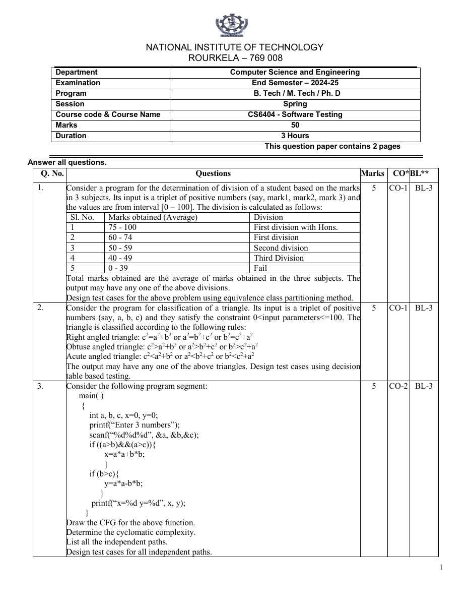
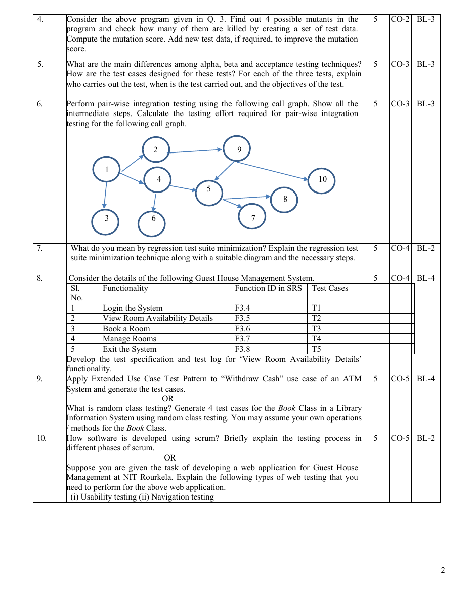
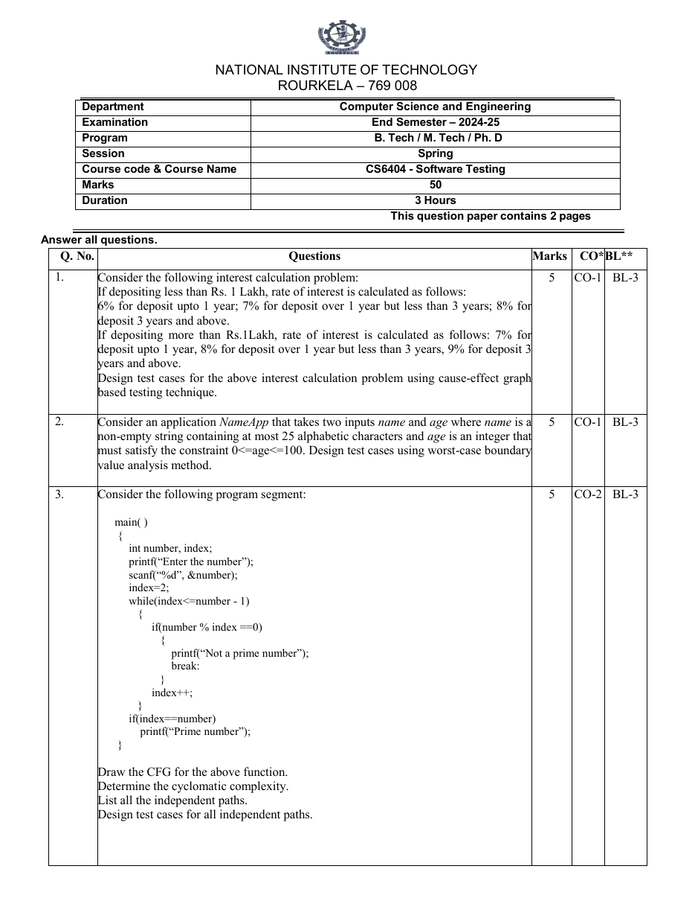
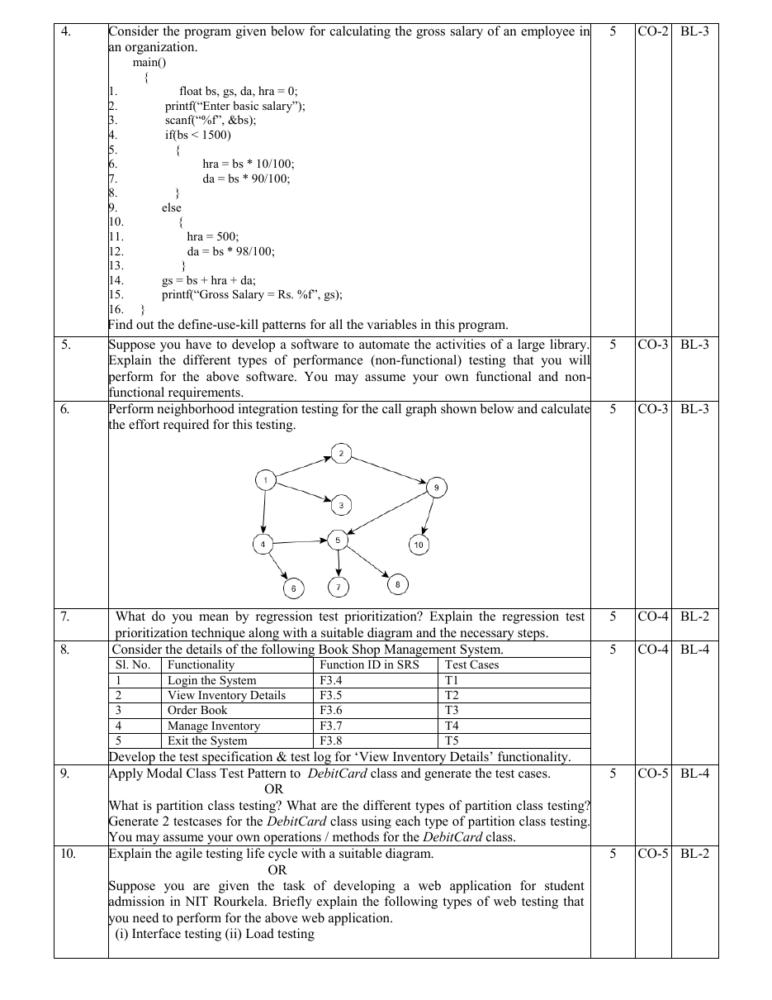
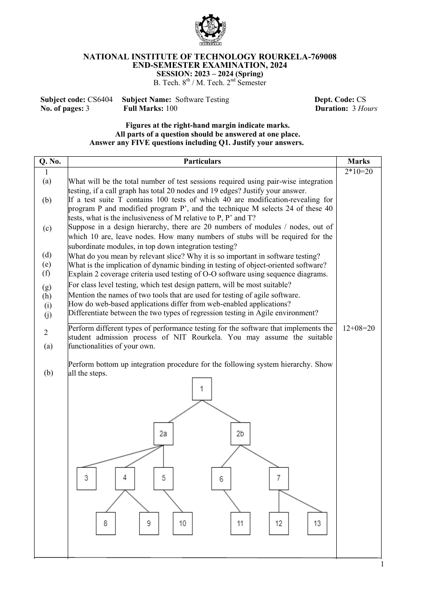
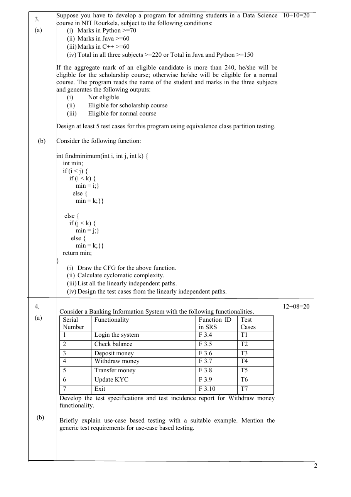
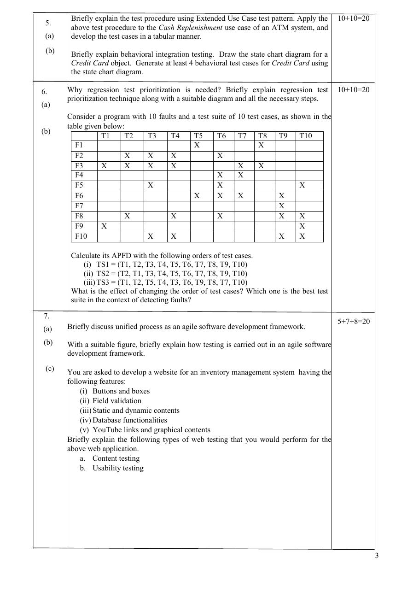

<!DOCTYPE html>
<html lang="en">
<head>
<meta charset="utf-8">
<meta name="viewport" content="width=device-width, initial-scale=1">
<title>Software Testing (CS6404) PYQ – Questions &amp; Solutions</title>
<meta name="description" content="CS6404 Software Testing previous year questions (NIT Rourkela) with worked solutions: test design, CFG, mutation, integration, regression, OO and web testing.">
<link rel="preconnect" href="https://fonts.googleapis.com">
<link rel="preconnect" href="https://fonts.gstatic.com" crossorigin>
<link href="https://fonts.googleapis.com/css2?family=VT323&family=Source+Serif+4:ital,opsz,wght@0,8..60,400..700;1,8..60,400..700&family=JetBrains+Mono:wght@400;500;700&display=swap" rel="stylesheet">
<script>
window.MathJax = {
  tex: { inlineMath: [['\\(', '\\)']], displayMath: [['\\[', '\\]']], processEscapes: true },
  options: { skipHtmlTags: ['script','noscript','style','textarea','pre','code'] }
};
</script>
<script async src="https://cdn.jsdelivr.net/npm/mathjax@3/es5/tex-chtml.js"></script>
<style>
:root{
  --font-display:'VT323',ui-monospace,'JetBrains Mono',monospace;
  --font-body:'Source Serif 4','Source Serif Pro','Iowan Old Style',Georgia,serif;
  --font-mono:'JetBrains Mono',ui-monospace,Consolas,monospace;
  --bg:#fafaf5;--bg-surface:#f3f1e8;--bg-hover:#ece9dc;
  --ink:#1a1a1a;--ink-soft:#4a4a4a;--ink-mute:#7a7a78;
  --rule:#1a1a1a;--rule-soft:rgba(26,26,26,.16);--paper-rule:rgba(26,26,26,.08);
  --blueprint:#3553ff;--tint:rgba(53,83,255,.08);--tint-strong:rgba(53,83,255,.18);
  --code-bg:#efece0;--header-bg:rgba(250,250,245,.94);--warn:#b8870f;--ok:#1d7a46;
  --shadow:3px 3px 0 var(--ink);--sbw:300px;
}
[data-theme=dark]{
  --bg:#0a0d1a;--bg-surface:#131830;--bg-hover:#1b2244;
  --ink:#e8e6dc;--ink-soft:#a8a6a0;--ink-mute:#7a7878;
  --rule:#e8e6dc;--rule-soft:rgba(232,230,220,.18);--paper-rule:rgba(232,230,220,.08);
  --blueprint:#6b8eff;--tint:rgba(107,142,255,.12);--tint-strong:rgba(107,142,255,.22);
  --code-bg:#131830;--header-bg:rgba(10,13,26,.94);--warn:#d4a83d;--ok:#4fc283;
}
*,*::before,*::after{margin:0;padding:0;box-sizing:border-box}
html{scroll-behavior:smooth;scroll-padding-top:90px}
body{font-family:var(--font-body);font-size:18px;line-height:1.62;color:var(--ink);background-color:var(--bg);
  background-image:radial-gradient(var(--paper-rule) 1px,transparent 1px);background-size:16px 16px;background-attachment:fixed;
  -webkit-font-smoothing:antialiased;text-rendering:optimizeLegibility;transition:background-color .2s,color .2s}
::selection{background:var(--blueprint);color:var(--bg)}

/* header */
.site-header{position:fixed;top:0;left:0;right:0;z-index:100;background:var(--header-bg);backdrop-filter:blur(10px);border-bottom:1px solid var(--rule-soft)}
.header-inner{max-width:1460px;margin:0 auto;padding:0 20px;height:64px;display:flex;align-items:center;gap:16px}
.logo{font-family:var(--font-display);font-size:1.6rem;text-transform:uppercase;letter-spacing:.04em;color:var(--ink);text-decoration:none;display:flex;align-items:baseline;gap:8px;margin-right:auto;white-space:nowrap}
.logo i{display:inline-block;width:12px;height:12px;background:var(--blueprint)}
.header-nav{display:flex;gap:20px;align-items:center}
.header-nav a{font-family:var(--font-mono);font-size:.78rem;letter-spacing:.06em;text-transform:uppercase;color:var(--ink-soft);text-decoration:none;border-bottom:1px solid transparent}
.header-nav a:hover{color:var(--blueprint);border-bottom-color:var(--blueprint)}
button{font-family:var(--font-mono);background:transparent;color:var(--ink);border:1px solid var(--rule-soft);cursor:pointer;font-size:.9rem;width:36px;height:36px;border-radius:0}
button:hover{background:var(--tint);border-color:var(--blueprint);color:var(--blueprint)}

/* sidebar */
aside{position:fixed;top:64px;bottom:0;left:0;width:var(--sbw);overflow:auto;padding:16px 12px 40px 16px;border-right:1px solid var(--rule-soft);background:var(--header-bg);z-index:50;transition:transform .25s cubic-bezier(.32,.72,.0,1)}
.side-head{display:flex;align-items:center;gap:6px;margin-bottom:10px}
.side-head h4{margin:0;margin-right:auto;font-family:var(--font-mono);font-size:.7rem;font-weight:500;letter-spacing:.16em;text-transform:uppercase;color:var(--blueprint)}
.side-head button{width:auto;height:26px;padding:0 8px;font-size:.66rem;letter-spacing:.06em;text-transform:uppercase}
aside a{display:block;font-family:var(--font-mono);font-size:.74rem;line-height:1.35;color:var(--ink-soft);text-decoration:none;padding:5px 8px;border-left:2px solid transparent;border-bottom:0}
aside a:hover{color:var(--blueprint);background:var(--tint);border-left-color:var(--blueprint)}
aside a.n1{flex:1;font-weight:700;color:var(--ink);letter-spacing:.03em;text-transform:uppercase;border-left:2px solid var(--ink)}
aside a.n2{padding-left:30px}
aside a.on{color:var(--blueprint);background:var(--tint);border-left-color:var(--blueprint)}
.grp{margin-top:10px}
.grp .row{display:flex;align-items:stretch;gap:2px}
.grp .car{width:24px;height:auto;min-height:28px;flex:none;border:0;padding:0;font-size:.7rem;color:var(--ink-soft);background:transparent}
.grp .car::before{content:"▾";display:inline-block;transition:transform .18s}
.grp.closed .car::before{transform:rotate(-90deg)}
.grp.closed .sub{display:none}

main{margin-left:var(--sbw);padding:96px 48px 100px;max-width:1160px;transition:margin .25s}
body.nosb aside{transform:translateX(-100%)}
body.nosb main{margin-left:auto;margin-right:auto}
.crumbs{font-family:var(--font-mono);font-size:.72rem;letter-spacing:.12em;text-transform:uppercase;color:var(--ink-mute);margin-bottom:6px}

/* headings */
h1,h2,h3,h4{font-family:var(--font-display);font-weight:400;line-height:1;letter-spacing:.02em;text-transform:uppercase;color:var(--blueprint);overflow-wrap:break-word}
h1{font-size:clamp(2.4rem,5vw,3.6rem);margin:2.4em 0 .5em;padding-top:.6em;border-top:3px solid var(--ink);position:relative}
h1::before{content:"PAPER";font-family:var(--font-mono);font-size:.68rem;letter-spacing:.2em;position:absolute;top:10px;left:0;color:var(--ink-mute)}
h1.doc-title{margin-top:.2em;border-top:0;padding-top:0}
h1.doc-title::before{content:none}
h1.plain::before{content:"REVISION"}
h2{font-size:clamp(1.9rem,3.4vw,2.5rem);margin:2.2em 0 .6em;padding:0 0 .25em;border-bottom:1px solid var(--rule-soft)}
h2::after{content:"";display:block;width:64px;height:3px;background:var(--blueprint);margin-top:.3em}
h3{font-size:clamp(1.35rem,2.4vw,1.7rem);margin:1.9em 0 .5em;padding-left:12px;border-left:4px solid var(--blueprint);color:var(--ink)}
h4{font-size:1.2rem;margin:1.4em 0 .4em}
p,li{overflow-wrap:anywhere}
p{margin:.8em 0}
ul,ol{margin:.7em 0 .7em 1.4em}
li{margin:.25em 0}
li::marker{color:var(--blueprint);font-family:var(--font-mono)}
strong{font-weight:700}
a{color:var(--blueprint);text-decoration:none;border-bottom:1px solid transparent}
a:hover{border-bottom-color:var(--blueprint)}

blockquote{margin:1.2em 0;padding:12px 18px;background:var(--bg-surface);border:1px solid var(--ink);border-left:6px solid var(--warn);box-shadow:var(--shadow);color:var(--ink-soft)}
blockquote p{margin:.3em 0}
.note{margin:1em 0;padding:8px 14px;border-left:4px solid var(--ok);background:var(--tint);font-size:.95rem}

/* tables */
.tw{overflow-x:auto;margin:1.3em 0;border:1px solid var(--ink);box-shadow:var(--shadow);background:var(--bg)}
table{border-collapse:collapse;width:100%;font-size:.9rem;line-height:1.45}
th,td{padding:8px 12px;border-bottom:1px solid var(--rule-soft);border-right:1px solid var(--rule-soft);text-align:left;vertical-align:top}
th:last-child,td:last-child{border-right:0}
th{font-family:var(--font-mono);font-size:.7rem;font-weight:500;letter-spacing:.1em;text-transform:uppercase;background:var(--bg-surface);color:var(--blueprint);border-bottom:1px solid var(--ink)}
tbody tr:nth-child(even) td{background:var(--tint)}
tr:last-child td{border-bottom:0}
td.c,th.c{text-align:center}

/* figures */
img{display:block;max-width:100%;height:auto;margin:1.4em auto;border:1px solid var(--ink);box-shadow:var(--shadow);background:#fff;padding:8px}
img.zoom{cursor:zoom-in}
.pages{display:grid;grid-template-columns:repeat(auto-fit,minmax(260px,1fr));gap:14px}
.pages img{margin:0}
details.pg{margin:1em 0;border:1px solid var(--rule-soft);background:var(--bg-surface)}
details.pg>summary{cursor:pointer;padding:8px 14px;font-family:var(--font-mono);font-size:.74rem;letter-spacing:.08em;text-transform:uppercase;color:var(--blueprint)}
details.pg[open]>summary{border-bottom:1px solid var(--rule-soft)}
details.pg .pages{padding:14px}
svg.cg{display:block;max-width:100%;height:auto;margin:1em auto;border:1px solid var(--ink);box-shadow:var(--shadow);background:var(--bg)}
svg.cg circle{fill:var(--bg);stroke:var(--ink);stroke-width:1.5}
svg.cg text{fill:var(--ink);font:600 13px 'JetBrains Mono',monospace;text-anchor:middle;dominant-baseline:central}
svg.cg text.lbl{font-weight:400;font-size:11px;fill:var(--ink-soft)}
svg.cg line,svg.cg path.e{stroke:var(--blueprint);stroke-width:1.6;fill:none}
svg.cg marker path{fill:var(--blueprint)}
svg.cg rect{fill:var(--bg);stroke:var(--ink);stroke-width:1.5}
svg.cg polygon{fill:var(--bg);stroke:var(--ink);stroke-width:1.5}

/* code */
code,pre{font-family:var(--font-mono)}
code{background:var(--code-bg);padding:1px 6px;font-size:.84em;border:1px solid var(--rule-soft)}
pre{background:var(--code-bg);border:1px solid var(--ink);box-shadow:var(--shadow);padding:14px 16px;overflow:auto;font-size:.78rem;line-height:1.5;margin:1.3em 0}
pre code{background:none;border:0;padding:0;font-size:inherit}
mjx-container[display=true]{overflow-x:auto;overflow-y:hidden;padding:6px 0;margin:.9em 0!important}
hr{border:0;height:6px;margin:3em 0;background-image:repeating-linear-gradient(to right,var(--blueprint) 0,var(--blueprint) 4px,transparent 4px,transparent 8px);background-size:100% 3px;background-repeat:no-repeat;opacity:.8}
em{font-style:italic}

#lb{position:fixed;inset:0;background:rgba(10,13,26,.78);display:none;align-items:center;justify-content:center;z-index:200;cursor:zoom-out}
#lb img{max-width:95vw;max-height:92vh;margin:0}
#top{position:fixed;right:20px;bottom:20px;width:auto;padding:0 12px;height:34px;background:var(--bg);box-shadow:var(--shadow);display:none;z-index:60;border-color:var(--ink);font-size:.72rem;letter-spacing:.1em}

@media(max-width:980px){
  .header-nav{display:none}
  aside{transform:translateX(-100%);width:310px}
  aside.open{transform:none;box-shadow:6px 0 0 rgba(0,0,0,.15)}
  main,body.nosb main{margin-left:0;padding:88px 18px 80px}
  body{font-size:17px}
}
@media print{.site-header,aside,#top{display:none}main{margin:0;max-width:none;padding:0}}
</style>
</head>
<body>
<header class="site-header"><div class="header-inner">
  <button id="menu" aria-label="Collapse or expand sidebar" title="Collapse / expand sidebar">≡</button>
  <a href="#top-of-page" class="logo"><i></i>SOFTWARE TESTING / PYQ</a>
  <nav class="header-nav"><a href="#paper-a">Paper A</a><a href="#paper-b">Paper B</a><a href="#paper-c">Paper C</a><a href="#formula-sheet">Cheat sheet</a></nav>
  <button id="theme" aria-label="Toggle theme"><span id="ti">N</span></button>
</div></header>
<aside id="side">
  <div class="side-head"><h4>Contents</h4><button id="expAll" title="Expand all sections">Expand</button><button id="colAll" title="Collapse all sections">Collapse</button></div>
  <nav id="toc"></nav>
</aside>
<main id="top-of-page">
<p class="crumbs">PYQ / CS6404 Software Testing</p>
<h1 class="doc-title" id="doc-title">Software Testing (CS6404) – Previous Year Questions with Solutions</h1>
<blockquote>
<p>Worked answers to the three NIT Rourkela CS6404 papers in the <code>PYQ/</code> folder. Test cases, CFGs, cyclomatic complexity, mutation score, integration effort and APFD were <strong>re-computed and cross-checked</strong>. Where a question is ambiguous the assumption is stated.</p>
</blockquote>
<p><strong>Sidebar:</strong> click the caret next to a paper to collapse/expand its questions, use <em>Expand / Collapse</em> to open or close everything, and the <code>≡</code> button hides the whole sidebar.</p>
<h2 id="contents">Contents</h2>
<div class="tw"><table>
<thead><tr><th>Paper</th><th>Source file</th><th>Topics</th></tr></thead>
<tbody>
<tr><td><a href="#paper-a"><strong>Paper A</strong></a></td><td><code>PYQ/CS6404.pdf</code> – End Sem 2024-25, 50 marks</td><td>ECP, decision table, CFG, mutation, alpha/beta/acceptance, pair-wise integration, suite minimisation, test spec &amp; log, extended use case / random class, scrum / web testing</td></tr>
<tr><td><a href="#paper-b"><strong>Paper B</strong></a></td><td><code>PYQ/CS6404 (1).pdf</code> – End Sem 2024-25, 50 marks</td><td>cause-effect graph, worst-case BVA, CFG (prime), define-use-kill, performance testing, neighbourhood integration, prioritisation, test spec &amp; log, modal / partition class, agile life cycle / web testing</td></tr>
<tr><td><a href="#paper-c"><strong>Paper C</strong></a></td><td><code>PYQ/CS6404 (2).pdf</code> – End Sem 2024 (Spring 2023-24), 100 marks</td><td>short questions (a–j), performance &amp; bottom-up, ECP + CFG, use-case testing, behavioural testing, APFD, unified process &amp; agile, web testing</td></tr>
<tr><td><a href="#formula-sheet"><strong>Cheat sheet</strong></a></td><td>–</td><td>Every formula used above on one page</td></tr>
</tbody></table></div>

<hr />
<h1 id="paper-a">Paper A – End Sem 2024-25 (50 marks)</h1>
<details class="pg"><summary>Show original question paper pages (CS6404.pdf)</summary><div class="pages">

</div></details>

<h2 id="a-q1">A-Q1 – Equivalence class partitioning (division of a student)</h2>
<blockquote><p>Input: three marks in [0, 100]. Average ≥75 → First division with Hons., 60–74 → First, 50–59 → Second, 40–49 → Third, 0–39 → Fail. Design test cases using <strong>equivalence class partitioning</strong>. [5]</p></blockquote>
<p><strong>Method.</strong> Partition the <em>input</em> domain into classes that the program should treat alike, then pick one representative per class. Here the output depends on the <strong>average</strong> \(\text{avg}=(m_1+m_2+m_3)/3\), and each mark must be a valid number in \([0,100]\).</p>
<div class="tw"><table>
<thead><tr><th>Class</th><th>Condition</th><th>Type</th><th>Expected result</th></tr></thead>
<tbody>
<tr><td>E1</td><td>\(75\le \text{avg}\le100\)</td><td>valid</td><td>First division with Hons.</td></tr>
<tr><td>E2</td><td>\(60\le \text{avg}\le74\)</td><td>valid</td><td>First division</td></tr>
<tr><td>E3</td><td>\(50\le \text{avg}\le59\)</td><td>valid</td><td>Second division</td></tr>
<tr><td>E4</td><td>\(40\le \text{avg}\le49\)</td><td>valid</td><td>Third division</td></tr>
<tr><td>E5</td><td>\(0\le \text{avg}\le39\)</td><td>valid</td><td>Fail</td></tr>
<tr><td>E6</td><td>any mark \(<0\)</td><td>invalid</td><td>Error – invalid input</td></tr>
<tr><td>E7</td><td>any mark \(>100\)</td><td>invalid</td><td>Error – invalid input</td></tr>
<tr><td>E8</td><td>non-numeric / missing mark</td><td>invalid</td><td>Error – invalid input</td></tr>
</tbody></table></div>
<div class="tw"><table>
<thead><tr><th>TC</th><th>mark1</th><th>mark2</th><th>mark3</th><th>Average</th><th>Class</th><th>Expected output</th></tr></thead>
<tbody>
<tr><td>1</td><td>90</td><td>80</td><td>85</td><td>85</td><td>E1</td><td>First division with Hons.</td></tr>
<tr><td>2</td><td>70</td><td>65</td><td>66</td><td>67</td><td>E2</td><td>First division</td></tr>
<tr><td>3</td><td>55</td><td>58</td><td>52</td><td>55</td><td>E3</td><td>Second division</td></tr>
<tr><td>4</td><td>45</td><td>42</td><td>48</td><td>45</td><td>E4</td><td>Third division</td></tr>
<tr><td>5</td><td>20</td><td>30</td><td>25</td><td>25</td><td>E5</td><td>Fail</td></tr>
<tr><td>6</td><td>−5</td><td>60</td><td>70</td><td>–</td><td>E6</td><td>Invalid input</td></tr>
<tr><td>7</td><td>60</td><td>101</td><td>70</td><td>–</td><td>E7</td><td>Invalid input</td></tr>
<tr><td>8</td><td>"abc"</td><td>60</td><td>70</td><td>–</td><td>E8</td><td>Invalid input</td></tr>
</tbody></table></div>
<p class="note">Average values such as 74.5 or 59.5 fall in the gaps between the stated bands. The paper does not define them, so a good answer also flags this as a specification defect (use boundary tests 74/75, 59/60, 49/50, 39/40 once the rule is clarified).</p>

<h2 id="a-q2">A-Q2 – Decision-table testing (triangle classification)</h2>
<blockquote><p>Inputs a, b, c with \(0<\) each \(\le100\). Right: \(c^2=a^2+b^2\) (or a permutation); Obtuse: \(c^2>a^2+b^2\) (or permutation); Acute: \(c^2<a^2+b^2\) (or permutation). Design test cases using <strong>decision-table based testing</strong>. [5]</p></blockquote>
<p><strong>Conditions</strong> (let \(c\) be the largest side, otherwise permute): C1: \(a,b,c\) each in \((0,100]\); C2: \(a^2+b^2=c^2\); C3: \(a^2+b^2<c^2\); C4: \(a^2+b^2>c^2\) (with the largest side as \(c\)).<br>
<strong>Actions:</strong> A1 Right-angled, A2 Obtuse-angled, A3 Acute-angled, A4 Invalid input.</p>
<div class="tw"><table>
<thead><tr><th>Rule</th><th class="c">R1</th><th class="c">R2</th><th class="c">R3</th><th class="c">R4</th></tr></thead>
<tbody>
<tr><td>C1: inputs in range</td><td class="c">F</td><td class="c">T</td><td class="c">T</td><td class="c">T</td></tr>
<tr><td>C2: \(a^2+b^2=c^2\)</td><td class="c">–</td><td class="c">T</td><td class="c">F</td><td class="c">F</td></tr>
<tr><td>C3: \(a^2+b^2<c^2\)</td><td class="c">–</td><td class="c">F</td><td class="c">T</td><td class="c">F</td></tr>
<tr><td>C4: \(a^2+b^2>c^2\)</td><td class="c">–</td><td class="c">F</td><td class="c">F</td><td class="c">T</td></tr>
<tr><td><strong>Action</strong></td><td class="c">Invalid</td><td class="c">Right</td><td class="c">Obtuse</td><td class="c">Acute</td></tr>
</tbody></table></div>
<p>C2, C3, C4 are mutually exclusive (exactly one is true for a given input), so there are only 4 feasible rules instead of \(2^4=16\).</p>
<div class="tw"><table>
<thead><tr><th>TC</th><th>a</th><th>b</th><th>c</th><th>Rule</th><th>Check</th><th>Expected</th></tr></thead>
<tbody>
<tr><td>1</td><td>3</td><td>4</td><td>5</td><td>R2</td><td>9+16 = 25</td><td>Right-angled</td></tr>
<tr><td>2</td><td>5</td><td>12</td><td>13</td><td>R2</td><td>25+144 = 169 (permutation test: largest side last)</td><td>Right-angled</td></tr>
<tr><td>3</td><td>13</td><td>5</td><td>12</td><td>R2</td><td>\(a^2=b^2+c^2\) (other permutation)</td><td>Right-angled</td></tr>
<tr><td>4</td><td>2</td><td>3</td><td>4</td><td>R3</td><td>4+9 = 13 &lt; 16</td><td>Obtuse-angled</td></tr>
<tr><td>5</td><td>4</td><td>5</td><td>6</td><td>R4</td><td>16+25 = 41 &gt; 36 (and all permutations)</td><td>Acute-angled</td></tr>
<tr><td>6</td><td>0</td><td>4</td><td>5</td><td>R1</td><td>a not &gt; 0</td><td>Invalid input</td></tr>
<tr><td>7</td><td>101</td><td>50</td><td>60</td><td>R1</td><td>a &gt; 100</td><td>Invalid input</td></tr>
</tbody></table></div>
<p class="note">The paper's rules never mention the triangle inequality, so e.g. (1, 2, 10) would be reported as "Obtuse" although it is not a triangle. Mention this as an extra condition (C0: \(a+b>c\) etc.) if the examiner allows.</p>

<h2 id="a-q3">A-Q3 – CFG, cyclomatic complexity and independent paths</h2>
<blockquote><p>Program with <code>if ((a&gt;b)&amp;&amp;(a&gt;c)) x=a*a+b*b;</code> and <code>if (b&gt;c) y=a*a-b*b;</code>. Draw CFG, find \(V(G)\), list independent paths, design test cases. [5]</p></blockquote>
<p><strong>Node numbering</strong> (the compound condition is split into two predicate nodes, as in standard CFG practice):</p>
<div class="tw"><table>
<thead><tr><th>Node</th><th>Statement</th></tr></thead>
<tbody>
<tr><td>1</td><td><code>int a,b,c,x=0,y=0; printf; scanf</code></td></tr>
<tr><td>2</td><td><code>if (a&gt;b)</code></td></tr>
<tr><td>3</td><td><code>&amp;&amp; (a&gt;c)</code></td></tr>
<tr><td>4</td><td><code>x = a*a + b*b</code></td></tr>
<tr><td>5</td><td><code>if (b&gt;c)</code></td></tr>
<tr><td>6</td><td><code>y = a*a - b*b</code></td></tr>
<tr><td>7</td><td><code>printf("x=%d y=%d")</code></td></tr>
</tbody></table></div>
<svg class="cg" viewBox="0 0 360 520" style="width:360px" role="img"><defs><marker id="ar" viewBox="0 0 10 10" refX="9" refY="5" markerWidth="7" markerHeight="7" orient="auto-start-reverse"><path d="M0 0L10 5L0 10z"/></marker></defs><line x1="180.0" y1="46.0" x2="180.0" y2="81.0" marker-end="url(#ar)"/><line x1="168.7" y1="111.3" x2="123.4" y2="156.6" marker-end="url(#ar)"/><text class="lbl" x="154.1" y="127.9">T</text><line x1="180.0" y1="116.0" x2="180.0" y2="311.0" marker-end="url(#ar)"/><text class="lbl" x="188.0" y="207.5">F</text><line x1="110.0" y1="186.0" x2="110.0" y2="231.0" marker-end="url(#ar)"/><text class="lbl" x="118.0" y="202.5">T</text><line x1="116.4" y1="184.7" x2="172.4" y2="312.6" marker-end="url(#ar)"/><text class="lbl" x="152.4" y="242.6">F</text><line x1="120.5" y1="262.0" x2="167.5" y2="315.7" marker-end="url(#ar)"/><line x1="180.0" y1="346.0" x2="180.0" y2="391.0" marker-end="url(#ar)"/><text class="lbl" x="188.0" y="362.5">T</text><line x1="180.0" y1="346.0" x2="180.0" y2="461.0" marker-end="url(#ar)"/><text class="lbl" x="188.0" y="397.5">F</text><line x1="180.0" y1="426.0" x2="180.0" y2="461.0" marker-end="url(#ar)"/><circle cx="180" cy="30" r="16"/><text x="180" y="30">1</text><circle cx="180" cy="100" r="16"/><text x="180" y="100">2</text><circle cx="110" cy="170" r="16"/><text x="110" y="170">3</text><circle cx="110" cy="250" r="16"/><text x="110" y="250">4</text><circle cx="180" cy="330" r="16"/><text x="180" y="330">5</text><circle cx="180" cy="410" r="16"/><text x="180" y="410">6</text><circle cx="180" cy="480" r="16"/><text x="180" y="480">7</text></svg>
<p><strong>Cyclomatic complexity.</strong> \(N=7\) nodes, \(E=9\) edges, one connected component:</p>
\[ V(G)=E-N+2P=9-7+2=4 \qquad\text{(also }=\text{predicate nodes}+1=3+1=4\text{)} \]
<p>(If the whole <code>(a&gt;b)&amp;&amp;(a&gt;c)</code> is drawn as <em>one</em> decision node, \(V(G)=3\); say which convention you use.)</p>
<p><strong>Independent paths</strong> (each adds at least one new edge):</p>
<div class="tw"><table>
<thead><tr><th>Path</th><th>Node sequence</th><th>Condition</th><th>Test data (a, b, c)</th><th>Expected output</th></tr></thead>
<tbody>
<tr><td>P1</td><td>1-2-5-7</td><td>a≤b, b≤c</td><td>1, 2, 3</td><td>x=0 y=0</td></tr>
<tr><td>P2</td><td>1-2-5-6-7</td><td>a≤b, b&gt;c</td><td>1, 3, 2</td><td>x=0 y=−8</td></tr>
<tr><td>P3</td><td>1-2-3-5-7</td><td>a&gt;b, a≤c, b≤c</td><td>3, 2, 4</td><td>x=0 y=0</td></tr>
<tr><td>P4</td><td>1-2-3-4-5-7</td><td>a&gt;b, a&gt;c, b≤c</td><td>5, 2, 3</td><td>x=29 y=0</td></tr>
</tbody></table></div>
<p>The remaining path 1-2-3-4-5-6-7 (a=5, b=4, c=3 → x=41, y=9) is a linear combination of the four and is not independent, but is a useful extra test.</p>

<h2 id="a-q4">A-Q4 – Mutation testing and mutation score</h2>
<blockquote><p>For the program of Q3, find 4 mutants, check how many a test set kills, compute the mutation score, and add tests if needed. [5]</p></blockquote>
<p><strong>Original outputs</strong> for test set \(T=\{t_1\ldots t_4\}\) (the independent-path tests): \(t_1(1,2,3)\to x{=}0,y{=}0\); \(t_2(1,3,2)\to 0,-8\); \(t_3(3,2,4)\to 0,0\); \(t_4(5,2,3)\to 29,0\).</p>
<div class="tw"><table>
<thead><tr><th>Mutant</th><th>Change (operator)</th><th>Killed by T?</th><th>Killing test</th></tr></thead>
<tbody>
<tr><td>M1</td><td><code>b&gt;c</code> → <code>b&gt;=c</code> (boundary)</td><td><strong>No</strong> – differs only when b = c, which t1–t4 never test</td><td>new \(t_5=(1,2,2)\): original y=0; M1 gives y=1−4=−3</td></tr>
<tr><td>M2</td><td><code>a&gt;c</code> → <code>a&gt;=c</code> (boundary)</td><td><strong>No</strong> – differs only when a = c</td><td>new \(t_6=(3,2,3)\): original x=0; M2 gives x=13</td></tr>
<tr><td>M3</td><td><code>x=a*a+b*b</code> → <code>x=a*a-b*b</code> (arithmetic op.)</td><td>Yes</td><td>\(t_4\): original x=29, M3 gives 21</td></tr>
<tr><td>M4</td><td><code>y=a*a-b*b</code> → <code>y=a*a+b*b</code> (arithmetic op.)</td><td>Yes</td><td>\(t_2\): original y=−8, M4 gives 10</td></tr>
</tbody></table></div>
\[ \text{Mutation score}=\frac{\text{killed mutants}}{\text{total}-\text{equivalent}}\times100 \]
<ul>
<li>With \(T\) (4 tests): \(2/4=50\%\).</li>
<li>After adding \(t_5\) and \(t_6\): \(4/4=\mathbf{100\%}\). No mutant is equivalent here.</li>
</ul>

<h2 id="a-q5">A-Q5 – Alpha vs beta vs acceptance testing</h2>
<blockquote><p>Differences, how test cases are designed, and for each: who tests, when, objectives. [5]</p></blockquote>
<div class="tw"><table>
<thead><tr><th></th><th>Alpha testing</th><th>Beta testing</th><th>Acceptance testing</th></tr></thead>
<tbody>
<tr><td><strong>Who</strong></td><td>Internal staff / in-house testers and a few friendly users, at the developer's site</td><td>Real end users (a sample of the target market) at their own site</td><td>The customer / client (or customer's representative / domain experts)</td></tr>
<tr><td><strong>When</strong></td><td>After system testing, before release to outsiders; software is feature-complete but may still be buggy</td><td>After alpha, just before the final release; product is stable</td><td>After system testing, before the software is handed over / accepted; formal sign-off</td></tr>
<tr><td><strong>Environment</strong></td><td>Controlled, developer's lab</td><td>Uncontrolled real-world environment</td><td>Customer's (or production-like) environment</td></tr>
<tr><td><strong>Objective</strong></td><td>Find residual defects, crashes and usability problems early; confirm functionality and stability</td><td>Gather feedback on usability, compatibility, reliability and performance under real conditions</td><td>Decide whether the software meets the contract / requirements and business needs, i.e. accept or reject</td></tr>
<tr><td><strong>Test-case design</strong></td><td>Black-box and white-box; derived from SRS and design; scripted and exploratory; developers can fix at once</td><td>Mostly unscripted – users exercise the product freely; feedback via bug reports / surveys</td><td>Black-box, derived from the requirement specification and use cases / user stories; agreed acceptance criteria, scripted scenarios</td></tr>
<tr><td><strong>Data</strong></td><td>Simulated or synthetic</td><td>Real</td><td>Real or realistic</td></tr>
</tbody></table></div>

<h2 id="a-q6">A-Q6 – Pair-wise integration testing and effort</h2>
<blockquote><p>Call graph with 10 nodes (shown below). Perform pair-wise integration testing, show all steps and compute the effort. [5]</p></blockquote>
<svg class="cg" viewBox="0 0 520 300" style="width:520px" role="img"><defs><marker id="ar" viewBox="0 0 10 10" refX="9" refY="5" markerWidth="7" markerHeight="7" orient="auto-start-reverse"><path d="M0 0L10 5L0 10z"/></marker></defs><line x1="74.6" y1="93.4" x2="152.7" y2="57.9" marker-end="url(#ar)"/><line x1="60.0" y1="116.0" x2="60.0" y2="211.0" marker-end="url(#ar)"/><line x1="74.6" y1="106.6" x2="152.7" y2="142.1" marker-end="url(#ar)"/><line x1="186.0" y1="50.0" x2="281.0" y2="50.0" marker-end="url(#ar)"/><line x1="186.0" y1="150.0" x2="281.0" y2="150.0" marker-end="url(#ar)"/><line x1="170.0" y1="166.0" x2="170.0" y2="231.0" marker-end="url(#ar)"/><line x1="300.0" y1="66.0" x2="300.0" y2="131.0" marker-end="url(#ar)"/><line x1="316.0" y1="50.0" x2="421.0" y2="50.0" marker-end="url(#ar)"/><line x1="304.6" y1="165.3" x2="324.5" y2="231.8" marker-end="url(#ar)"/><line x1="314.9" y1="155.7" x2="412.3" y2="193.2" marker-end="url(#ar)"/><circle cx="60" cy="100" r="16"/><text x="60" y="100">1</text><circle cx="170" cy="50" r="16"/><text x="170" y="50">2</text><circle cx="60" cy="230" r="16"/><text x="60" y="230">3</text><circle cx="170" cy="150" r="16"/><text x="170" y="150">4</text><circle cx="300" cy="150" r="16"/><text x="300" y="150">5</text><circle cx="170" cy="250" r="16"/><text x="170" y="250">6</text><circle cx="330" cy="250" r="16"/><text x="330" y="250">7</text><circle cx="430" cy="200" r="16"/><text x="430" y="200">8</text><circle cx="300" cy="50" r="16"/><text x="300" y="50">9</text><circle cx="440" cy="50" r="16"/><text x="440" y="50">10</text></svg>
<p><strong>Edges (calls):</strong> 1→2, 1→3, 1→4, 2→9, 4→5, 4→6, 9→5, 9→10, 5→7, 5→8 &nbsp;⇒ \(E=10\), \(N=10\).</p>
<p><strong>Method.</strong> Pair-wise integration eliminates stubs and drivers: every <em>edge</em> of the call graph is one integration session, in which the two real units at its ends are tested together (the caller exercises the callee).</p>
<div class="tw"><table>
<thead><tr><th>Session</th><th>Pair under test</th><th>Session</th><th>Pair under test</th></tr></thead>
<tbody>
<tr><td>1</td><td>(1, 2)</td><td>6</td><td>(4, 6)</td></tr>
<tr><td>2</td><td>(1, 3)</td><td>7</td><td>(9, 5)</td></tr>
<tr><td>3</td><td>(1, 4)</td><td>8</td><td>(9, 10)</td></tr>
<tr><td>4</td><td>(2, 9)</td><td>9</td><td>(5, 7)</td></tr>
<tr><td>5</td><td>(4, 5)</td><td>10</td><td>(5, 8)</td></tr>
</tbody></table></div>
<p><strong>Effort</strong> = number of sessions = number of edges = <strong>10</strong>. (Neighbourhood integration of the same graph needs only 5 – see B-Q6.)</p>

<h2 id="a-q7">A-Q7 – Regression test suite minimisation</h2>
<blockquote><p>What is it? Explain the technique with a diagram and the steps. [5]</p></blockquote>
<p><strong>Definition.</strong> Given a test suite \(T\), a set of test requirements \(r_1,\dots,r_n\) (statements, branches, functions, faults…) that must be satisfied, and subsets \(T_1,\dots,T_n\subseteq T\) where any test in \(T_i\) satisfies \(r_i\), <em>minimisation</em> finds a smallest \(T'\subseteq T\) that satisfies every \(r_i\). It removes redundant test cases, so the regression suite runs faster. It is the <em>minimum hitting-set</em> problem, which is NP-complete, so greedy heuristics are used. Drawback: removed tests may have revealed faults the kept ones miss.</p>
<pre><code>        Test suite T  +  coverage info (which test covers which requirement)
                          |
                          v
        Build requirement-vs-test matrix
                          |
                          v
        Select essential tests (only test covering some r_i)  --&gt; add to T'
                          |
                          v
        Greedy loop: pick test covering most still-uncovered requirements
                          |                           ^
                          v                           |
              all requirements covered? --- no -------+
                          | yes
                          v
        Minimised suite T'  (T minus redundant tests)  --&gt;  run on modified program P'</code></pre>
<p><strong>Steps with a small example.</strong> Requirements r1–r5; coverage: T1 → {r1,r2}, T2 → {r2,r3}, T3 → {r3,r4,r5}, T4 → {r1,r5}.</p>
<ol>
<li>Essential tests: r4 is covered only by T3 → T3 must stay; T3 also covers r3, r4, r5.</li>
<li>Remaining uncovered: r1, r2. T1 covers both → pick T1.</li>
<li>All covered. \(T'=\{T1,T3\}\); T2, T4 are redundant and dropped (size 4 → 2).</li>
</ol>

<h2 id="a-q8">A-Q8 – Test specification &amp; test log: "View Room Availability Details"</h2>
<blockquote><p>Guest House Management System, function F3.5, test case T2. Develop the test specification and test log. [5]</p></blockquote>
<h3 id="a-q8-spec">Test specification (IEEE 829 style)</h3>
<div class="tw"><table>
<tbody>
<tr><th>Test case ID</th><td>T2</td></tr>
<tr><th>Function / SRS id</th><td>View Room Availability Details – F3.5</td></tr>
<tr><th>Objective</th><td>Verify that a logged-in user can query the availability of rooms for a date range and room type, and that the displayed data is correct</td></tr>
<tr><th>Pre-conditions</th><td>T1 (login) passed; database holds rooms with known booking data; user logged in</td></tr>
<tr><th>Test items</th><td>Availability screen, availability query module, room database</td></tr>
<tr><th>Environment</th><td>Web browser, test DB loaded with the data set below</td></tr>
<tr><th>Dependencies</th><td>T1 must pass; T3 (Book a Room) uses the same data</td></tr>
</tbody></table></div>
<div class="tw"><table>
<thead><tr><th>Step</th><th>Input / action</th><th>Expected result</th></tr></thead>
<tbody>
<tr><td>2.1</td><td>Select "View Room Availability" from the menu</td><td>Search screen with check-in, check-out and room-type fields</td></tr>
<tr><td>2.2</td><td>Check-in 10-Nov, check-out 12-Nov, type = AC Double</td><td>List of free AC Double rooms with room no., rate and status "Available"</td></tr>
<tr><td>2.3</td><td>Dates where all rooms are booked</td><td>Message "No rooms available for the selected dates"</td></tr>
<tr><td>2.4</td><td>Check-out earlier than check-in</td><td>Error "Check-out must be after check-in"; no list shown</td></tr>
<tr><td>2.5</td><td>Check-in in the past / empty field</td><td>Validation error, query not executed</td></tr>
<tr><td>2.6</td><td>Book a listed room via T3 and repeat 2.2</td><td>That room no longer appears (data consistency)</td></tr>
</tbody></table></div>
<h3 id="a-q8-log">Test log</h3>
<div class="tw"><table>
<thead><tr><th>Step</th><th>Date / time</th><th>Tester</th><th>Actual result</th><th>Status</th><th>Remarks</th></tr></thead>
<tbody>
<tr><td>2.1</td><td>dd-mm-yyyy hh:mm</td><td>name</td><td>Search screen displayed</td><td>Pass</td><td>–</td></tr>
<tr><td>2.2</td><td>dd-mm-yyyy hh:mm</td><td>name</td><td>5 rooms listed, correct rates</td><td>Pass</td><td>–</td></tr>
<tr><td>2.3</td><td>dd-mm-yyyy hh:mm</td><td>name</td><td>Message shown</td><td>Pass</td><td>–</td></tr>
<tr><td>2.4</td><td>dd-mm-yyyy hh:mm</td><td>name</td><td>List shown with no error</td><td>Fail</td><td>Defect raised, see incident report</td></tr>
<tr><td>2.5</td><td>dd-mm-yyyy hh:mm</td><td>name</td><td>Validation error</td><td>Pass</td><td>–</td></tr>
<tr><td>2.6</td><td>dd-mm-yyyy hh:mm</td><td>name</td><td>Room removed from list</td><td>Pass</td><td>–</td></tr>
</tbody></table></div>
<p class="note">The "actual result" columns are illustrative sample entries, since the test log is filled during execution. State this in the exam.</p>

<h2 id="a-q9">A-Q9 – Extended Use Case test pattern: "Withdraw Cash" (ATM)</h2>
<blockquote><p>Apply the Extended Use Case test pattern to the Withdraw Cash use case and generate test cases. <strong>OR</strong> What is random class testing? Generate 4 test cases for the <em>Book</em> class. [5]</p></blockquote>
<h3 id="a-q9-a">Option 1 – Extended Use Case pattern</h3>
<p><strong>Pattern steps (Binder):</strong> (1) take the use case and identify its <em>operational variables</em> (inputs and conditions that decide the path); (2) define the <em>domain</em> of each variable (valid / invalid / boundary values); (3) build the <em>extended use case</em> table – one row for every distinct combination of variable values (a "variant") with its expected outcome; (4) derive at least one test case per row, adding boundary values for numeric variables.</p>
<p><strong>Operational variables:</strong> Card (valid / invalid), PIN (correct / wrong / wrong 3×), Amount (&lt;min, multiple of 100 within limit, not a multiple, &gt; daily limit), Balance (≥ amount / &lt; amount), ATM cash (enough / not enough), Receipt (yes / no).</p>
<div class="tw"><table>
<thead><tr><th>TC</th><th>Card</th><th>PIN</th><th>Amount</th><th>Balance</th><th>ATM cash</th><th>Expected outcome</th></tr></thead>
<tbody>
<tr><td>1</td><td>valid</td><td>correct</td><td>₹2,000</td><td>₹10,000</td><td>enough</td><td>Cash dispensed, balance = ₹8,000, receipt printed (main flow)</td></tr>
<tr><td>2</td><td>valid</td><td>correct</td><td>₹2,000</td><td>₹10,000</td><td>enough, receipt = no</td><td>Cash dispensed, no receipt</td></tr>
<tr><td>3</td><td>invalid</td><td>–</td><td>–</td><td>–</td><td>–</td><td>Card ejected / retained, "Invalid card"</td></tr>
<tr><td>4</td><td>valid</td><td>wrong (1st)</td><td>–</td><td>–</td><td>–</td><td>"Wrong PIN", re-entry allowed</td></tr>
<tr><td>5</td><td>valid</td><td>wrong ×3</td><td>–</td><td>–</td><td>–</td><td>Card blocked / retained</td></tr>
<tr><td>6</td><td>valid</td><td>correct</td><td>₹1,500 (not multiple of 100)</td><td>₹10,000</td><td>enough</td><td>"Enter amount in multiples of 100"</td></tr>
<tr><td>7</td><td>valid</td><td>correct</td><td>₹50,001 (over daily limit ₹50,000)</td><td>₹1,00,000</td><td>enough</td><td>"Daily limit exceeded"</td></tr>
<tr><td>8</td><td>valid</td><td>correct</td><td>₹5,000</td><td>₹3,000</td><td>enough</td><td>"Insufficient balance"; no debit</td></tr>
<tr><td>9</td><td>valid</td><td>correct</td><td>₹5,000</td><td>₹10,000</td><td>only ₹2,000</td><td>"Cash not available"; no debit</td></tr>
<tr><td>10</td><td>valid</td><td>correct</td><td>₹3,000</td><td>₹3,000 (= amount)</td><td>enough</td><td>Cash dispensed, balance = ₹0 (boundary)</td></tr>
</tbody></table></div>
<h3 id="a-q9-b">Option 2 – Random class testing (Book class)</h3>
<p><strong>Random class testing</strong> generates test cases by randomly selecting <em>sequences of method calls</em> and random argument values for a class, subject to the class's pre-conditions, then checking the result with an oracle/invariants (e.g. <code>0 ≤ availableCopies ≤ totalCopies</code>). It finds interactions that hand-made tests miss, but it needs a good oracle. Steps: list operations → define argument domains and call-probabilities → generate random valid sequences → run and compare with expected state.</p>
<p>Assumed operations: <code>Book(title,isbn,copies)</code>, <code>issue()</code>, <code>returnBook()</code>, <code>reserve(member)</code>, <code>getAvailable()</code>.</p>
<div class="tw"><table>
<thead><tr><th>TC</th><th>Random sequence</th><th>Expected</th></tr></thead>
<tbody>
<tr><td>1</td><td><code>Book("DL","111",2); issue(); issue(); getAvailable()</code></td><td>0</td></tr>
<tr><td>2</td><td><code>Book("DL","111",1); issue(); issue()</code></td><td>second issue rejected ("not available"); available stays 0</td></tr>
<tr><td>3</td><td><code>Book("ST","222",3); issue(); returnBook(); returnBook()</code></td><td>second return rejected (cannot exceed 3); available = 3</td></tr>
<tr><td>4</td><td><code>Book("ST","222",1); issue(); reserve("M7"); returnBook(); getAvailable()</code></td><td>book held for M7 → available = 0 (reserved), invariant holds</td></tr>
</tbody></table></div>

<h2 id="a-q10">A-Q10 – Scrum and the testing process</h2>
<blockquote><p>How is software developed using Scrum? Explain testing in the different phases. <strong>OR</strong> Usability and navigation testing of the Guest House web application. [5]</p></blockquote>
<h3 id="a-q10-a">Option 1 – Scrum</h3>
<p><strong>Roles:</strong> Product Owner (owns and orders the product backlog), Scrum Master (removes impediments, enforces process), Development Team (self-organising, includes testers). <strong>Artifacts:</strong> product backlog, sprint backlog, increment. <strong>Events:</strong> sprint (1–4 weeks), sprint planning, daily scrum (15 min), sprint review, sprint retrospective.</p>
<pre><code>Product Backlog --&gt; Sprint Planning --&gt; Sprint Backlog --&gt; [ Sprint 1-4 weeks, Daily Scrum ] --&gt; Potentially shippable Increment
       ^                                                                                     |
       +------------------------ Sprint Review + Retrospective &lt;---------------------------+</code></pre>
<div class="tw"><table>
<thead><tr><th>Phase</th><th>Testing activity</th></tr></thead>
<tbody>
<tr><td>Product backlog / release planning</td><td>Testers help write user stories and <strong>acceptance criteria</strong>; testability and risk review; estimate test effort</td></tr>
<tr><td>Sprint planning</td><td>Define "Definition of Done" (incl. tests), plan test tasks, set up environments and test data</td></tr>
<tr><td>Sprint execution (daily)</td><td>Test-driven development, unit tests by developers, continuous integration, story-level functional tests, exploratory testing, automation of regression tests, defects fixed within the sprint; attend daily scrum</td></tr>
<tr><td>Sprint review</td><td>Demo to Product Owner/stakeholders; acceptance testing against the criteria</td></tr>
<tr><td>Retrospective</td><td>Review test process: escaped defects, automation coverage, what to improve</td></tr>
<tr><td>Release / hardening sprint</td><td>Regression, performance, security and end-to-end testing across all sprints</td></tr>
</tbody></table></div>
<h3 id="a-q10-b">Option 2 – Usability &amp; navigation testing (Guest House website)</h3>
<ul>
<li><strong>Usability testing</strong> – checks ease of use for the real users (guests, reception staff): clear labels, minimal clicks to book a room, consistent layout, helpful error messages, readable fonts/colours, accessibility (alt text, keyboard use), works on mobile. Done with representative users performing tasks (e.g. "find an AC room for 2 nights and book it"), measuring task success, time and satisfaction.</li>
<li><strong>Navigation testing</strong> – checks that users can move through the site: all menu items, links and buttons lead to the right page (no broken/dead links), back/forward and breadcrumbs work, the user can always return to Home, logged-in/out menus differ correctly, internal anchors work, and links to NIT Rourkela pages open. Tools: link checkers, Selenium scripts.</li>
</ul>

<hr />
<h1 id="paper-b">Paper B – End Sem 2024-25 (50 marks)</h1>
<details class="pg"><summary>Show original question paper pages (CS6404 (1).pdf)</summary><div class="pages">

</div></details>

<h2 id="b-q1">B-Q1 – Cause-effect graph (interest calculation)</h2>
<blockquote><p>Deposit &lt; ₹1 lakh: 6 % up to 1 yr; 7 % over 1 yr but &lt; 3 yrs; 8 % for 3 yrs and above. Deposit &gt; ₹1 lakh: 7 %, 8 %, 9 % respectively. Design test cases using the <strong>cause-effect graph</strong> technique. [5]</p></blockquote>
<p><strong>Causes</strong> (inputs/conditions): C1 deposit &lt; ₹1,00,000; C2 deposit &gt; ₹1,00,000 (mutually exclusive with C1); C3 period ≤ 1 year; C4 1 year &lt; period &lt; 3 years; C5 period ≥ 3 years (C3, C4, C5 mutually exclusive – "exclusive" constraint).<br>
<strong>Effects:</strong> E1 = 6 %, E2 = 7 %, E3 = 8 %, E4 = 9 %.</p>
<p><strong>Graph (Boolean equations):</strong></p>
<pre><code>E1 = C1 AND C3
E2 = (C1 AND C4) OR (C2 AND C3)
E3 = (C1 AND C5) OR (C2 AND C4)
E4 = C2 AND C5
Constraints:  E(C1,C2)   - at most one deposit class
              E(C3,C4,C5) - exactly one period class</code></pre>
<svg class="cg" viewBox="0 0 560 250" style="width:560px"><defs><marker id="ar" viewBox="0 0 10 10" refX="9" refY="5" markerWidth="7" markerHeight="7" orient="auto-start-reverse"><path d="M0 0L10 5L0 10z"/></marker></defs><circle cx="40" cy="30" r="16"/><text x="40" y="30">C1</text><circle cx="40" cy="80" r="16"/><text x="40" y="80">C2</text><circle cx="40" cy="150" r="16"/><text x="40" y="150">C3</text><circle cx="40" cy="200" r="16"/><text x="40" y="200">C4</text><circle cx="40" cy="230" r="0"/><text class="lbl" x="130" y="236">C5 (period ≥ 3) combines the same way</text><rect x="174" y="41" width="52" height="28"/><text x="200" y="55">AND</text><rect x="174" y="111" width="52" height="28"/><text x="200" y="125">AND</text><rect x="304" y="76" width="52" height="28"/><text x="330" y="90">OR</text><rect x="444" y="76" width="52" height="28"/><text x="470" y="90">E2 7%</text><line x1="56" y1="30" x2="172" y2="50" marker-end="url(#ar)"/><line x1="56" y1="200" x2="172" y2="60" marker-end="url(#ar)"/>
 <line x1="56" y1="80" x2="172" y2="120" marker-end="url(#ar)"/><line x1="56" y1="150" x2="172" y2="130" marker-end="url(#ar)"/>
 <line x1="226" y1="55" x2="304" y2="85" marker-end="url(#ar)"/><line x1="226" y1="125" x2="304" y2="95" marker-end="url(#ar)"/>
 <line x1="356" y1="90" x2="440" y2="90" marker-end="url(#ar)"/>
 <text class="lbl" x="300" y="20">E2 = (C1 ∧ C4) ∨ (C2 ∧ C3)</text></svg>
<p><strong>Decision table</strong> derived from the graph (one column per effect combination):</p>
<div class="tw"><table>
<thead><tr><th></th><th class="c">R1</th><th class="c">R2</th><th class="c">R3</th><th class="c">R4</th><th class="c">R5</th><th class="c">R6</th></tr></thead>
<tbody>
<tr><td>C1 deposit &lt; 1 L</td><td class="c">1</td><td class="c">1</td><td class="c">1</td><td class="c">0</td><td class="c">0</td><td class="c">0</td></tr>
<tr><td>C2 deposit &gt; 1 L</td><td class="c">0</td><td class="c">0</td><td class="c">0</td><td class="c">1</td><td class="c">1</td><td class="c">1</td></tr>
<tr><td>C3 period ≤ 1 yr</td><td class="c">1</td><td class="c">0</td><td class="c">0</td><td class="c">1</td><td class="c">0</td><td class="c">0</td></tr>
<tr><td>C4 1 &lt; period &lt; 3</td><td class="c">0</td><td class="c">1</td><td class="c">0</td><td class="c">0</td><td class="c">1</td><td class="c">0</td></tr>
<tr><td>C5 period ≥ 3 yr</td><td class="c">0</td><td class="c">0</td><td class="c">1</td><td class="c">0</td><td class="c">0</td><td class="c">1</td></tr>
<tr><td><strong>Effect</strong></td><td class="c">6 %</td><td class="c">7 %</td><td class="c">8 %</td><td class="c">7 %</td><td class="c">8 %</td><td class="c">9 %</td></tr>
</tbody></table></div>
<div class="tw"><table>
<thead><tr><th>TC</th><th>Deposit (₹)</th><th>Period</th><th>Rule</th><th>Expected rate</th></tr></thead>
<tbody>
<tr><td>1</td><td>50,000</td><td>1 year</td><td>R1</td><td>6 %</td></tr>
<tr><td>2</td><td>50,000</td><td>2 years</td><td>R2</td><td>7 %</td></tr>
<tr><td>3</td><td>50,000</td><td>3 years</td><td>R3</td><td>8 %</td></tr>
<tr><td>4</td><td>2,00,000</td><td>6 months</td><td>R4</td><td>7 %</td></tr>
<tr><td>5</td><td>2,00,000</td><td>2 years</td><td>R5</td><td>8 %</td></tr>
<tr><td>6</td><td>2,00,000</td><td>5 years</td><td>R6</td><td>9 %</td></tr>
<tr><td>7 (extra)</td><td>1,00,000 (exactly)</td><td>2 years</td><td>–</td><td>Not specified by the question – report as a specification gap</td></tr>
</tbody></table></div>

<h2 id="b-q2">B-Q2 – Worst-case boundary value analysis (NameApp)</h2>
<blockquote><p><em>name</em>: non-empty string of at most 25 alphabetic characters; <em>age</em>: integer with \(0\le age\le100\). Design test cases using <strong>worst-case BVA</strong>. [5]</p></blockquote>
<p><strong>Worst-case BVA</strong> takes the Cartesian product of the five values {min, min+, nom, max−, max} of <em>every</em> variable, so for \(n\) variables it gives \(5^n\) cases (robust worst-case would give \(7^n\)). Here \(n=2\) ⇒ \(5^2=\mathbf{25}\) test cases.</p>
<p>Name length: min = 1, min+ = 2, nom = 13, max− = 24, max = 25. Age: min = 0, min+ = 1, nom = 50, max− = 99, max = 100.</p>
<div class="tw"><table>
<thead><tr><th>TC</th><th>name length</th><th>age</th><th>TC</th><th>name length</th><th>age</th><th>TC</th><th>name length</th><th>age</th></tr></thead>
<tbody>
<tr><td>1</td><td>1</td><td>0</td><td>10</td><td>2</td><td>100</td><td>19</td><td>24</td><td>99</td></tr>
<tr><td>2</td><td>1</td><td>1</td><td>11</td><td>13</td><td>0</td><td>20</td><td>24</td><td>100</td></tr>
<tr><td>3</td><td>1</td><td>50</td><td>12</td><td>13</td><td>1</td><td>21</td><td>25</td><td>0</td></tr>
<tr><td>4</td><td>1</td><td>99</td><td>13</td><td>13</td><td>50</td><td>22</td><td>25</td><td>1</td></tr>
<tr><td>5</td><td>1</td><td>100</td><td>14</td><td>13</td><td>99</td><td>23</td><td>25</td><td>50</td></tr>
<tr><td>6</td><td>2</td><td>0</td><td>15</td><td>13</td><td>100</td><td>24</td><td>25</td><td>99</td></tr>
<tr><td>7</td><td>2</td><td>1</td><td>16</td><td>24</td><td>0</td><td>25</td><td>25</td><td>100</td></tr>
<tr><td>8</td><td>2</td><td>50</td><td>17</td><td>24</td><td>1</td><td></td><td></td><td></td></tr>
<tr><td>9</td><td>2</td><td>99</td><td>18</td><td>24</td><td>50</td><td></td><td></td><td></td></tr>
</tbody></table></div>
<p>Every case is valid and expects "accepted". Use alphabetic strings of the stated length (e.g. length 1 = "A", length 25 = "Abcdefghijklmnopqrstuvwxy"). The all-nominal point is TC 13 (13, 50).</p>
<p><strong>Optional robust extras</strong> (just outside the boundaries; expected: rejected): name length 0 (empty), name length 26, age −1, age 101, and a non-alphabetic name such as "Abc12".</p>

<h2 id="b-q3">B-Q3 – CFG, \(V(G)\) and independent paths (prime number)</h2>
<blockquote><p>Program: <code>index=2; while(index&lt;=number-1){ if(number%index==0){printf("Not a prime"); break;} index++; } if(index==number) printf("Prime");</code> Draw CFG, find cyclomatic complexity, list independent paths and design test cases. [5]</p></blockquote>
<div class="tw"><table>
<thead><tr><th>Node</th><th>Statement</th></tr></thead>
<tbody>
<tr><td>1</td><td><code>printf("Enter"); scanf("%d",&amp;number); index = 2;</code></td></tr>
<tr><td>2</td><td><code>while (index &lt;= number-1)</code></td></tr>
<tr><td>3</td><td><code>if (number % index == 0)</code></td></tr>
<tr><td>4</td><td><code>printf("Not a prime number"); break;</code></td></tr>
<tr><td>5</td><td><code>index++;</code></td></tr>
<tr><td>6</td><td><code>if (index == number)</code></td></tr>
<tr><td>7</td><td><code>printf("Prime number");</code></td></tr>
<tr><td>8</td><td>exit (end of function)</td></tr>
</tbody></table></div>
<svg class="cg" viewBox="0 0 400 520" style="width:400px" role="img"><defs><marker id="ar" viewBox="0 0 10 10" refX="9" refY="5" markerWidth="7" markerHeight="7" orient="auto-start-reverse"><path d="M0 0L10 5L0 10z"/></marker></defs><line x1="200.0" y1="46.0" x2="200.0" y2="81.0" marker-end="url(#ar)"/><line x1="200.0" y1="116.0" x2="200.0" y2="161.0" marker-end="url(#ar)"/><text class="lbl" x="208.0" y="132.5">T</text><line x1="196.7" y1="115.7" x2="153.9" y2="321.4" marker-end="url(#ar)"/><text class="lbl" x="183.3" y="212.5">F</text><line x1="186.9" y1="189.2" x2="115.6" y2="239.1" marker-end="url(#ar)"/><text class="lbl" x="159.2" y="208.1">T</text><line x1="213.1" y1="189.2" x2="284.4" y2="239.1" marker-end="url(#ar)"/><text class="lbl" x="256.8" y="208.1">F</text><line x1="107.8" y1="264.0" x2="140.8" y2="323.4" marker-end="url(#ar)"/><line x1="291.1" y1="236.7" x2="210.5" y2="115.8" marker-end="url(#ar)"/><line x1="150.0" y1="356.0" x2="150.0" y2="391.0" marker-end="url(#ar)"/><text class="lbl" x="158.0" y="367.5">T</text><line x1="155.1" y1="355.2" x2="194.0" y2="472.0" marker-end="url(#ar)"/><text class="lbl" x="182.5" y="407.6">F</text><line x1="158.5" y1="423.6" x2="189.9" y2="473.9" marker-end="url(#ar)"/><circle cx="200" cy="30" r="16"/><text x="200" y="30">1</text><circle cx="200" cy="100" r="16"/><text x="200" y="100">2</text><circle cx="200" cy="180" r="16"/><text x="200" y="180">3</text><circle cx="100" cy="250" r="16"/><text x="100" y="250">4</text><circle cx="300" cy="250" r="16"/><text x="300" y="250">5</text><circle cx="150" cy="340" r="16"/><text x="150" y="340">6</text><circle cx="150" cy="410" r="16"/><text x="150" y="410">7</text><circle cx="200" cy="490" r="16"/><text x="200" y="490">8</text></svg>
<p>Edges: 1→2, 2→3, 2→6, 3→4, 3→5, 4→6 (break leaves the loop), 5→2, 6→7, 6→8, 7→8 &nbsp;⇒ \(E=10\), \(N=8\).</p>
\[ V(G)=E-N+2=10-8+2=4 \qquad (\text{predicates: }2,3,6\Rightarrow 3+1=4) \]
<div class="tw"><table>
<thead><tr><th>Path</th><th>Nodes</th><th>Test data (number)</th><th>Expected output</th></tr></thead>
<tbody>
<tr><td>P1</td><td>1-2-6-8</td><td>1 (loop never entered: 2 ≤ 0 false; index=2 ≠ 1)</td><td>nothing printed</td></tr>
<tr><td>P2</td><td>1-2-6-7-8</td><td>2 (2 ≤ 1 false; index = 2 = number)</td><td>Prime number</td></tr>
<tr><td>P3</td><td>1-2-3-4-6-8</td><td>4 (4 % 2 == 0 → break; index 2 ≠ 4)</td><td>Not a prime number</td></tr>
<tr><td>P4</td><td>1-2-3-5-2-6-7-8</td><td>3 (3 % 2 ≠ 0, index→3, loop ends, index == 3)</td><td>Prime number</td></tr>
</tbody></table></div>
<p class="note">Also useful: number = 9 (loop iterates twice before finding the divisor 3) and number = 7 (several iterations, ends prime). Note that the paper's <code>break:</code> is a typo for <code>break;</code>. After the loop, <code>index==number</code> is true only when the loop ran to completion (or for number = 2).</p>

<h2 id="b-q4">B-Q4 – Define-use-kill patterns (gross salary)</h2>
<blockquote><p>Find the define-use-kill (d-u-k) patterns for all variables of the gross-salary program. [5]</p></blockquote>
<p><strong>Notation.</strong> <strong>d</strong> = defined (assigned a value), <strong>u</strong> = used (read), <strong>k</strong> = killed (value destroyed / undefined, e.g. at program exit or redefinition without use). Using the line numbers from the paper:</p>
<div class="tw"><table>
<thead><tr><th>Line</th><th>Statement</th><th>Effect</th></tr></thead>
<tbody>
<tr><td>1</td><td><code>float bs, gs, da, hra = 0;</code></td><td>d(hra); bs, gs, da declared but undefined</td></tr>
<tr><td>3</td><td><code>scanf("%f",&amp;bs);</code></td><td>d(bs)</td></tr>
<tr><td>4</td><td><code>if (bs &lt; 1500)</code></td><td>u(bs) – predicate use</td></tr>
<tr><td>6</td><td><code>hra = bs*10/100;</code></td><td>u(bs), d(hra) – kills the old value 0</td></tr>
<tr><td>7</td><td><code>da = bs*90/100;</code></td><td>u(bs), d(da)</td></tr>
<tr><td>11</td><td><code>hra = 500;</code></td><td>d(hra) – kills the old value 0</td></tr>
<tr><td>12</td><td><code>da = bs*98/100;</code></td><td>u(bs), d(da)</td></tr>
<tr><td>14</td><td><code>gs = bs + hra + da;</code></td><td>u(bs), u(hra), u(da), d(gs)</td></tr>
<tr><td>15</td><td><code>printf(..., gs);</code></td><td>u(gs)</td></tr>
<tr><td>16</td><td><code>}</code> (exit)</td><td>k of all variables (scope ends)</td></tr>
</tbody></table></div>
<div class="tw"><table>
<thead><tr><th>Variable</th><th>Pattern (path-wise)</th><th>Comment</th></tr></thead>
<tbody>
<tr><td><code>bs</code></td><td>3(d) → 4(u) → 6(u) → 7(u) → 14(u) → 16(k) &nbsp;|&nbsp; 3(d) → 4(u) → 12(u) → 14(u) → 16(k)</td><td>Normal d-u-u…-k; defined once, used on both branches</td></tr>
<tr><td><code>hra</code></td><td>true branch: 1(d) → <strong>6(d)</strong> → 14(u) → 16(k) &nbsp;|&nbsp; false branch: 1(d) → <strong>11(d)</strong> → 14(u) → 16(k)</td><td>The initial value 0 from line 1 is <strong>killed (redefined) before any use</strong> on both paths – a "d-d" (define-define) anomaly: the initialisation is redundant</td></tr>
<tr><td><code>da</code></td><td>(undefined at 1) → 7(d) → 14(u) → 16(k) &nbsp;|&nbsp; 12(d) → 14(u) → 16(k)</td><td>Defined on every path before use – OK (no "u" before "d")</td></tr>
<tr><td><code>gs</code></td><td>14(d) → 15(u) → 16(k)</td><td>Normal d-u-k</td></tr>
</tbody></table></div>
<p><strong>Summary of anomalies:</strong> <code>hra</code> has a <em>dd</em> anomaly (line 1 value is never used); there is no <em>ur</em> (use-before-define) anomaly because bs, da and gs are always defined before use; no <em>dk</em> anomaly (every definition is used before the exit kill).</p>
<p><strong>def-use (du) pairs for data-flow testing:</strong> bs: (3,4), (3,6), (3,7), (3,12), (3,14); hra: (6,14), (11,14); da: (7,14), (12,14); gs: (14,15). Tests: bs = 1000 (true branch: hra=100, da=900, gs=2000) and bs = 2000 (false branch: hra=500, da=1960, gs=4460) cover all pairs.</p>

<h2 id="b-q5">B-Q5 – Performance (non-functional) testing of a library system</h2>
<blockquote><p>Explain the types of performance testing for a large-library automation software; assume your own requirements. [5]</p></blockquote>
<p><strong>Assumed requirements.</strong> Functional: member login, catalogue search, issue/return/renew, reservation, fines, reports. Non-functional: 5,000 concurrent users at peak, search response ≤ 2 s (95th percentile), issue/return ≤ 3 s, 99.5 % availability, 1 million book records.</p>
<div class="tw"><table>
<thead><tr><th>Type</th><th>What it checks</th><th>Library example</th></tr></thead>
<tbody>
<tr><td><strong>Load testing</strong></td><td>Behaviour under the expected normal and peak load</td><td>1,000 → 5,000 simulated users searching, issuing and returning; response time ≤ 2 s</td></tr>
<tr><td><strong>Stress testing</strong></td><td>Behaviour beyond capacity; breaking point and recovery</td><td>Raise to 10,000+ users or cut the DB memory; check for graceful errors, no data corruption (an issue must not be lost or doubled)</td></tr>
<tr><td><strong>Volume testing</strong></td><td>Large amounts of data</td><td>Load 1 M book records and 5 M transaction rows; check search, report and back-up time</td></tr>
<tr><td><strong>Spike testing</strong></td><td>Sudden large jump in load</td><td>Start-of-semester rush: users jump from 100 to 4,000 in a minute</td></tr>
<tr><td><strong>Endurance / soak testing</strong></td><td>Stability over long periods (memory leaks, connection leaks)</td><td>Run typical load for 24–72 hours; monitor memory/threads</td></tr>
<tr><td><strong>Scalability testing</strong></td><td>How performance grows when resources are added</td><td>Add application servers / DB replicas and check near-linear throughput</td></tr>
<tr><td><strong>Concurrency testing</strong></td><td>Simultaneous actions on the same data</td><td>Two librarians issue the last copy at the same moment: only one succeeds</td></tr>
<tr><td><strong>Configuration / compatibility</strong></td><td>Different hardware, OS, browsers, network speeds</td><td>Kiosk PCs, mobile, slow campus Wi-Fi</td></tr>
</tbody></table></div>
<p>Metrics: response time, throughput (transactions/s), CPU / memory / disk / network utilisation, error rate, number of concurrent users. Tools: JMeter, LoadRunner, Gatling.</p>

<h2 id="b-q6">B-Q6 – Neighbourhood integration testing and effort</h2>
<blockquote><p>Perform neighbourhood integration for the call graph shown below and calculate the effort. [5]</p></blockquote>
<svg class="cg" viewBox="0 0 520 300" style="width:520px" role="img"><defs><marker id="ar" viewBox="0 0 10 10" refX="9" refY="5" markerWidth="7" markerHeight="7" orient="auto-start-reverse"><path d="M0 0L10 5L0 10z"/></marker></defs><line x1="74.6" y1="93.4" x2="152.7" y2="57.9" marker-end="url(#ar)"/><line x1="60.0" y1="116.0" x2="60.0" y2="211.0" marker-end="url(#ar)"/><line x1="74.6" y1="106.6" x2="152.7" y2="142.1" marker-end="url(#ar)"/><line x1="186.0" y1="50.0" x2="281.0" y2="50.0" marker-end="url(#ar)"/><line x1="186.0" y1="150.0" x2="281.0" y2="150.0" marker-end="url(#ar)"/><line x1="170.0" y1="166.0" x2="170.0" y2="231.0" marker-end="url(#ar)"/><line x1="300.0" y1="66.0" x2="300.0" y2="131.0" marker-end="url(#ar)"/><line x1="316.0" y1="50.0" x2="421.0" y2="50.0" marker-end="url(#ar)"/><line x1="304.6" y1="165.3" x2="324.5" y2="231.8" marker-end="url(#ar)"/><line x1="314.9" y1="155.7" x2="412.3" y2="193.2" marker-end="url(#ar)"/><circle cx="60" cy="100" r="16"/><text x="60" y="100">1</text><circle cx="170" cy="50" r="16"/><text x="170" y="50">2</text><circle cx="60" cy="230" r="16"/><text x="60" y="230">3</text><circle cx="170" cy="150" r="16"/><text x="170" y="150">4</text><circle cx="300" cy="150" r="16"/><text x="300" y="150">5</text><circle cx="170" cy="250" r="16"/><text x="170" y="250">6</text><circle cx="330" cy="250" r="16"/><text x="330" y="250">7</text><circle cx="430" cy="200" r="16"/><text x="430" y="200">8</text><circle cx="300" cy="50" r="16"/><text x="300" y="50">9</text><circle cx="440" cy="50" r="16"/><text x="440" y="50">10</text></svg>
<p><strong>Edges:</strong> 1→2, 1→3, 1→4, 2→9, 9→5, 9→10, 4→5, 4→6, 5→7, 5→8. So \(N=10\), \(E=10\) (read from the figure; the edges 9→5 and 4→5 both enter node 5).</p>
<p><strong>Method.</strong> The <em>neighbourhood</em> of a node is the node together with its immediate predecessors and immediate successors (radius 1). Every node that has at least one callee (interior nodes <em>and</em> source nodes) gives one integration session in which the node and all its neighbours are tested together. Sink nodes (no callee) get no session of their own, because they appear in the neighbourhood of their caller.</p>
<div class="tw"><table>
<thead><tr><th>Node</th><th>Predecessors</th><th>Successors</th><th>Type</th><th>Neighbourhood session</th></tr></thead>
<tbody>
<tr><td>1</td><td>–</td><td>2, 3, 4</td><td>source</td><td>{1, 2, 3, 4}</td></tr>
<tr><td>2</td><td>1</td><td>9</td><td>yes</td><td>{1, 2, 9}</td></tr>
<tr><td>3</td><td>1</td><td>–</td><td>sink</td><td>–</td></tr>
<tr><td>4</td><td>1</td><td>5, 6</td><td>yes</td><td>{1, 4, 5, 6}</td></tr>
<tr><td>5</td><td>4, 9</td><td>7, 8</td><td>yes</td><td>{4, 9, 5, 7, 8}</td></tr>
<tr><td>6</td><td>4</td><td>–</td><td>sink</td><td>–</td></tr>
<tr><td>7</td><td>5</td><td>–</td><td>sink</td><td>–</td></tr>
<tr><td>8</td><td>5</td><td>–</td><td>sink</td><td>–</td></tr>
<tr><td>9</td><td>2</td><td>5, 10</td><td>yes</td><td>{2, 9, 5, 10}</td></tr>
<tr><td>10</td><td>9</td><td>–</td><td>sink</td><td>–</td></tr>
</tbody></table></div>
\[ \text{Neighbourhoods}=\text{Interior nodes}+\text{Source nodes}=\text{Nodes}-\text{Sink nodes}=10-5=5 \]
<p>Sink nodes: 3, 6, 7, 8, 10 (5). Interior nodes: 2, 4, 5, 9 (4). Source node: 1 (1). <strong>Effort = 5 neighbourhood sessions</strong>: {1,2,3,4}, {1,2,9}, {1,4,5,6}, {4,9,5,7,8}, {2,9,5,10} (compare: pair-wise integration needs 10 sessions, one per edge).</p>

<h2 id="b-q7">B-Q7 – Regression test prioritisation</h2>
<blockquote><p>What is it? Explain the technique with a diagram and the steps. [5]</p></blockquote>
<p><strong>Definition.</strong> Regression test prioritisation (TCP) <em>orders</em> the existing tests of a regression suite so that tests with the highest value run first, e.g. so faults are found earlier. Unlike minimisation nothing is discarded. Given suite \(T\), the set \(PT\) of its permutations, and an award function \(f:PT\to\mathbb R\), find \(T'\in PT\) with \(f(T')\ge f(T'')\) for all \(T''\in PT\).</p>
<pre><code>  Modified program P' + test suite T + execution history/coverage
                      |
          Choose goal (coverage, fault-detection rate, risk, requirement priority)
                      |
          Compute a score for every test case
                      |
          Sort tests in descending score (re-compute after each pick for "additional" strategy)
                      |
          Prioritised suite T'  --&gt;  execute in this order, stop whenever time runs out
                      |
          Measure effectiveness with APFD</code></pre>
<ol>
<li><strong>Collect data</strong>: statement/function coverage of each test, past failures, requirement priority, risk, change impact (modified code).</li>
<li><strong>Choose a strategy</strong>: <em>total</em> coverage (rank by total elements covered), <em>additional</em> coverage (greedy: repeatedly pick the test covering most still-uncovered elements), fault-exposing potential, requirements/risk based, history based.</li>
<li><strong>Score and order</strong> the tests.</li>
<li><strong>Execute</strong> in that order.</li>
<li><strong>Evaluate</strong> with \(\text{APFD}=1-\dfrac{TF_1+\dots+TF_m}{nm}+\dfrac{1}{2n}\) (see C-Q6).</li>
</ol>
<p>Benefit: early feedback, best use of limited testing time. Limitation: needs good coverage data and does not shrink the suite.</p>

<h2 id="b-q8">B-Q8 – Test specification &amp; log: "View Inventory Details"</h2>
<blockquote><p>Book Shop Management System, function F3.5, test case T2. Develop the test specification and test log. [5]</p></blockquote>
<h3 id="b-q8-spec">Test specification</h3>
<div class="tw"><table>
<tbody>
<tr><th>Test case ID</th><td>T2</td></tr>
<tr><th>Function / SRS id</th><td>View Inventory Details – F3.5</td></tr>
<tr><th>Objective</th><td>Verify that an authorised user can view the list of books with title, ISBN, author, price and stock quantity, and that search/filter and sorting work</td></tr>
<tr><th>Pre-conditions</th><td>T1 (login) passed; inventory table holds known records (e.g. 50 books, one with stock 0)</td></tr>
<tr><th>Environment</th><td>Application server with test database, browser/desktop client</td></tr>
<tr><th>Dependencies</th><td>T1; data created by T4 (Manage Inventory)</td></tr>
</tbody></table></div>
<div class="tw"><table>
<thead><tr><th>Step</th><th>Input / action</th><th>Expected result</th></tr></thead>
<tbody>
<tr><td>2.1</td><td>Choose "View Inventory"</td><td>Inventory screen opens with all books and a count of records</td></tr>
<tr><td>2.2</td><td>Search by title "Software Testing"</td><td>Only matching books listed with correct stock and price</td></tr>
<tr><td>2.3</td><td>Search for a non-existent ISBN</td><td>"No records found"</td></tr>
<tr><td>2.4</td><td>Sort by price ascending</td><td>Rows ordered correctly</td></tr>
<tr><td>2.5</td><td>Open a book with stock 0</td><td>Shown as "Out of stock"</td></tr>
<tr><td>2.6</td><td>Order a book (T3) then reopen inventory</td><td>Stock reduced by the ordered quantity</td></tr>
<tr><td>2.7</td><td>Access without login (direct URL)</td><td>Redirected to login; data not shown</td></tr>
</tbody></table></div>
<h3 id="b-q8-log">Test log</h3>
<div class="tw"><table>
<thead><tr><th>Step</th><th>Date / time</th><th>Tester</th><th>Actual result</th><th>Status</th><th>Remarks</th></tr></thead>
<tbody>
<tr><td>2.1</td><td>dd-mm-yyyy hh:mm</td><td>name</td><td>50 records displayed</td><td>Pass</td><td>–</td></tr>
<tr><td>2.2</td><td>dd-mm-yyyy hh:mm</td><td>name</td><td>2 matching books</td><td>Pass</td><td>–</td></tr>
<tr><td>2.3</td><td>dd-mm-yyyy hh:mm</td><td>name</td><td>"No records found"</td><td>Pass</td><td>–</td></tr>
<tr><td>2.4</td><td>dd-mm-yyyy hh:mm</td><td>name</td><td>Sorted as text, 100 before 20</td><td>Fail</td><td>Defect D-07 raised</td></tr>
<tr><td>2.5</td><td>dd-mm-yyyy hh:mm</td><td>name</td><td>"Out of stock"</td><td>Pass</td><td>–</td></tr>
<tr><td>2.6</td><td>dd-mm-yyyy hh:mm</td><td>name</td><td>Stock updated</td><td>Pass</td><td>–</td></tr>
<tr><td>2.7</td><td>dd-mm-yyyy hh:mm</td><td>name</td><td>Login page shown</td><td>Pass</td><td>–</td></tr>
</tbody></table></div>
<p class="note">Actual results are sample entries; a real log is filled in while executing the tests.</p>

<h2 id="b-q9">B-Q9 – Modal class test pattern (DebitCard) / partition class testing</h2>
<blockquote><p>Apply the Modal Class test pattern to the <em>DebitCard</em> class and generate test cases. <strong>OR</strong> What is partition class testing? Types? Generate 2 test cases per type for <em>DebitCard</em>. [5]</p></blockquote>
<h3 id="b-q9-a">Option 1 – Modal class test pattern</h3>
<p>A <em>modal class</em> has state-dependent behaviour (some operations are legal only in certain states). Pattern: (1) draw the <strong>state machine</strong> of the class; (2) build the <strong>state-transition table / tree</strong> including illegal (sneak) events; (3) pick test cases that cover every transition (and every state-event pair); (4) check the resulting state with an invariant.</p>
<p>Assumed states of <em>DebitCard</em>: <code>Inactive</code>, <code>Active</code>, <code>Blocked</code>, <code>Expired</code>. Events: <code>activate()</code>, <code>withdraw(amt)</code>, <code>wrongPin()</code> ×3, <code>unblock()</code>, <code>expire()</code>.</p>
<svg class="cg" viewBox="0 0 600 260" style="width:600px"><defs><marker id="ar" viewBox="0 0 10 10" refX="9" refY="5" markerWidth="7" markerHeight="7" orient="auto-start-reverse"><path d="M0 0L10 5L0 10z"/></marker></defs><line x1="128" y1="80" x2="232" y2="80" marker-end="url(#ar)"/><text class="lbl" x="180" y="72">activate</text><line x1="328" y1="89" x2="432" y2="89" marker-end="url(#ar)"/><text class="lbl" x="380" y="87">wrongPIN x3</text><line x1="432" y1="71" x2="328" y2="71" marker-end="url(#ar)"/><text class="lbl" x="380" y="69">unblock</text><line x1="280" y1="102" x2="280" y2="178" marker-end="url(#ar)"/><text class="lbl" x="280" y="132">expire</text><path class="e" d="M260 62 q20 -34 40 0" marker-end="url(#ar)"/><text class="lbl" x="280" y="32">withdraw</text><rect x="34" y="60" width="92" height="40" rx="14"/><text x="80" y="80">Inactive</text><rect x="234" y="60" width="92" height="40" rx="14"/><text x="280" y="80">Active</text><rect x="434" y="60" width="92" height="40" rx="14"/><text x="480" y="80">Blocked</text><rect x="234" y="180" width="92" height="40" rx="14"/><text x="280" y="200">Expired</text></svg>
<div class="tw"><table>
<thead><tr><th>TC</th><th>Start state</th><th>Event / sequence</th><th>Expected end state / outcome</th></tr></thead>
<tbody>
<tr><td>1</td><td>Inactive</td><td><code>activate()</code></td><td>Active</td></tr>
<tr><td>2</td><td>Active</td><td><code>withdraw(500)</code> (balance sufficient)</td><td>Active; balance reduced by 500</td></tr>
<tr><td>3</td><td>Active</td><td><code>withdraw(amt &gt; balance)</code></td><td>Active; rejected, balance unchanged</td></tr>
<tr><td>4</td><td>Active</td><td><code>wrongPin()</code> three times</td><td>Blocked</td></tr>
<tr><td>5</td><td>Blocked</td><td><code>unblock()</code></td><td>Active</td></tr>
<tr><td>6</td><td>Active</td><td><code>expire()</code></td><td>Expired</td></tr>
<tr><td>7</td><td>Inactive</td><td><code>withdraw(500)</code> (illegal event)</td><td>Rejected; remains Inactive</td></tr>
<tr><td>8</td><td>Blocked</td><td><code>withdraw(500)</code> (illegal)</td><td>Rejected; remains Blocked</td></tr>
<tr><td>9</td><td>Expired</td><td><code>activate()</code> (illegal)</td><td>Rejected; remains Expired</td></tr>
</tbody></table></div>
<h3 id="b-q9-b">Option 2 – Partition class testing</h3>
<p><strong>Partition class testing</strong> divides the inputs and/or the class's methods into partitions (equivalence classes) and tests one representative from each. Binder describes three kinds:</p>
<div class="tw"><table>
<thead><tr><th>Type</th><th>Basis of partitioning</th><th>2 test cases for DebitCard</th></tr></thead>
<tbody>
<tr><td><strong>1. General (input) partition</strong></td><td>Partition the <em>values</em> of the input of a method into valid / invalid / boundary classes</td><td><code>withdraw(amount)</code>: (a) amount = 500, in range → success; (b) amount = −1 → rejected</td></tr>
<tr><td><strong>2. State-based partition</strong></td><td>Partition by the <em>state</em> of the object in which a method is invoked</td><td>(a) Active card, <code>withdraw(500)</code> → success; (b) Blocked card, <code>withdraw(500)</code> → rejected</td></tr>
<tr><td><strong>3. Category (functional) partition</strong></td><td>Partition methods by function, e.g. <em>modifiers</em> (change state) vs <em>accessors</em> (read-only), and test each category</td><td>(a) modifier <code>deposit(1000)</code> → balance increases by 1000; (b) accessor <code>getBalance()</code> called repeatedly → value unchanged, no side effect</td></tr>
</tbody></table></div>

<h2 id="b-q10">B-Q10 – Agile testing life cycle / web testing</h2>
<blockquote><p>Explain the agile testing life cycle with a diagram. <strong>OR</strong> Interface and load testing of a student-admission web application. [5]</p></blockquote>
<h3 id="b-q10-a">Option 1 – Agile testing life cycle</h3>
<pre><code>  Release   -&gt;   Sprint   -&gt;   Sprint   -&gt;  ...  -&gt;  Release
  planning       planning      execution             hardening / release
                                (testing is part of every sprint)

  Per sprint:  Plan tests -&gt; Design/automate -&gt; Execute &amp; explore -&gt; Review (demo) -&gt; Retrospective
                  ^                                                                       |
                  +--------------------- feedback / new backlog items &lt;--------------------+</code></pre>
<ol>
<li><strong>Impact assessment / release planning</strong> – gather inputs from stakeholders and users, define the test strategy, identify risks and acceptance criteria for user stories.</li>
<li><strong>Agile testing planning</strong> – testers, developers, product owner agree on the test plan, schedule, deliverables and the environments for the sprint.</li>
<li><strong>Daily scrums / stand-ups</strong> – track test progress and blockers.</li>
<li><strong>Release readiness</strong> – check that features are done, defects are fixed and the build can be released.</li>
<li><strong>Test-case design and execution inside the sprint</strong> – TDD, story tests, automation, exploratory testing; defects fixed in the same sprint.</li>
<li><strong>Regression (hardening) and acceptance</strong> – full regression, non-functional tests and customer acceptance before release.</li>
<li><strong>Retrospective</strong> – improve the process for the next sprint.</li>
</ol>
<p>Key points: testing is continuous (not a late phase), testers join the team, frequent automated regression, quick feedback.</p>
<h3 id="b-q10-b">Option 2 – Interface and load testing (NIT admission web app)</h3>
<ul>
<li><strong>Interface testing</strong> – checks the interfaces between components: web server ↔ application server ↔ database, and external interfaces (payment gateway, SMS/e-mail, JEE rank-list import). Verify that requests/responses carry correct data, errors are handled (DB down, gateway timeout), data are saved properly when the user cancels/reloads, and that the user interface (forms, buttons, validations, browser compatibility) behaves as designed.</li>
<li><strong>Load testing</strong> – check performance under expected and peak load: e.g. 10,000 applicants registering and paying fees on the last day. Ramp up users, measure response time (&lt; 3 s), throughput, error rate, server utilisation, DB connection pool limit; find bottlenecks. Tools: JMeter, LoadRunner.</li>
</ul>

<hr />
<h1 id="paper-c">Paper C – End Sem 2024, Spring 2023-24 (100 marks)</h1>
<details class="pg"><summary>Show original question paper pages (CS6404 (2).pdf)</summary><div class="pages">

</div></details>
<p>Answer any five questions including Q1. Q1 has ten parts of 2 marks each.</p>

<h2 id="c-q1">C-Q1 – Short questions (a)–(j), 2 × 10 = 20</h2>

<h3 id="c-q1-a">(a) Pair-wise integration: 20 nodes, 19 edges – number of sessions?</h3>
<p>In pair-wise integration every edge of the call graph is one session, so the number of sessions = number of edges = <strong>19</strong>. (A graph with 20 nodes and 19 edges is a tree: \(E=N-1\).)</p>

<h3 id="c-q1-b">(b) Inclusiveness of technique M</h3>
<p>Inclusiveness is the percentage of modification-revealing tests of \(T\) that the technique selects:</p>
\[ \text{Inclusiveness}=\frac{\text{modification-revealing tests selected by }M}{\text{modification-revealing tests in }T}\times100=\frac{24}{40}\times100=\mathbf{60\%} \]

<h3 id="c-q1-c">(c) Stubs in top-down integration: 20 modules, 10 are leaves</h3>
<p>Top-down integration needs a stub for every subordinate module that is not yet integrated, i.e. for every module except the root: \(20-1=\mathbf{19}\) stubs in total over the whole process (one per non-root module). If integrating level by level, only the 10 leaf modules are the last to be replaced; the stubs required at the most for the subordinates of the non-leaf nodes are 19. (Answer: <strong>19</strong>; state the reasoning.)</p>

<h3 id="c-q1-d">(d) Relevant slice – what and why</h3>
<p>A <em>dynamic slice</em> of a program for a variable at a point and a given input contains the statements that actually affected that value in that run. The <strong>relevant slice</strong> extends it with the statements that <em>did not</em> execute but could have changed the value had the condition evaluated differently (the <em>potential dependences</em> – e.g. a predicate that was false and skipped an assignment). It is important because: (1) it is the minimal set of statements the fault may be in, so it makes debugging faster; (2) in regression testing a change in a relevant-slice statement can alter the output, so only the tests whose relevant slice contains the modified code need re-running – safer than using dynamic slices, which miss omission faults.</p>

<h3 id="c-q1-e">(e) Dynamic binding in O-O testing</h3>
<p>With polymorphism/dynamic binding a call <code>obj.m()</code> is resolved at run time to the version of <code>m</code> in the actual class of <code>obj</code>. Hence: the same call site can reach many methods, so every possible binding must be tested (each subclass override); statement/branch coverage of the call site is not enough; the number of paths and test cases explodes; static analysis cannot decide the called method; liskov-substitution and the inherited tests must be re-run for every subclass; faults appear only for particular receiver types.</p>

<h3 id="c-q1-f">(f) Two coverage criteria with sequence diagrams</h3>
<ul>
<li><strong>Message (sequence) path coverage / message coverage</strong> – every message in the sequence diagram is exercised at least once; stronger: every path of messages from the first to the last message (including alternative <code>alt</code> branches) is executed.</li>
<li><strong>Condition (guard) coverage / loop-fragment coverage</strong> – every guard condition of <code>alt/opt/loop</code> fragments is made both true and false, and each loop is run 0, 1 and many times.</li>
</ul>
<p>(Also acceptable: object-interaction coverage and message-sequence-pair coverage.)</p>

<h3 id="c-q1-g">(g) Test design pattern for class-level testing</h3>
<p>The <strong>Class Association</strong>, <strong>Modal Class</strong>, <strong>Non-modal Class</strong>, <strong>Quasi-modal Class</strong> test patterns of Binder (and the <em>Polymorphic Server</em> pattern) are used for class-level testing. The most suitable depends on the class: <strong>Modal Class</strong> test pattern for a class with state-dependent behaviour (state-machine based), and <strong>Non-modal Class</strong> test pattern (combinational/functional) for a class without state-dependent behaviour.</p>

<h3 id="c-q1-h">(h) Two tools for agile testing</h3>
<p><strong>Selenium</strong> (web UI automation) and <strong>JUnit / TestNG</strong> (unit testing for TDD). Also: Cucumber (BDD), Jenkins (CI), JMeter, Postman, Appium, FitNesse.</p>

<h3 id="c-q1-i">(i) Web-based vs web-enabled applications</h3>
<div class="tw"><table>
<thead><tr><th></th><th>Web-based application</th><th>Web-enabled application</th></tr></thead>
<tbody>
<tr><td>Meaning</td><td>Built for the web; all functions are delivered through a browser and run on a web server</td><td>An existing (often desktop / client-server) application given a web front-end</td></tr>
<tr><td>Architecture</td><td>Thin client; business logic, data on the server</td><td>Often legacy logic + web wrapper/gateway</td></tr>
<tr><td>Examples</td><td>Online banking, e-commerce site, webmail</td><td>Legacy ERP with browser access, web-enabled database</td></tr>
<tr><td>Testing focus</td><td>Browser compatibility, performance, security, navigation, usability</td><td>Integration of web layer with the legacy system, data conversion, session handling plus the above</td></tr>
</tbody></table></div>

<h3 id="c-q1-j">(j) Two types of regression testing in Agile</h3>
<div class="tw"><table>
<thead><tr><th></th><th>Sprint-level (iteration) regression</th><th>End-to-end / release-level regression</th></tr></thead>
<tbody>
<tr><td>When</td><td>At the end (and during) each sprint</td><td>Before the release, in a hardening sprint</td></tr>
<tr><td>Scope</td><td>New stories plus the existing features that the current sprint's changes may affect</td><td>The whole product, all sprints' features together</td></tr>
<tr><td>Done by</td><td>The team, mostly automated, CI-triggered</td><td>Test team, automated + manual, with non-functional tests</td></tr>
<tr><td>Aim</td><td>Quick feedback that the sprint did not break the increment</td><td>Confirm the integrated release is stable</td></tr>
</tbody></table></div>
<p>(Some books call these <em>progressive</em> regression – new/changed behaviour with updated tests – and <em>corrective</em> regression – no change in spec, existing tests reused. Mention both if unsure.)</p>

<h2 id="c-q2">C-Q2 – Performance testing and bottom-up integration, 12 + 8 = 20</h2>
<h3 id="c-q2-a">(a) Performance testing – student admission process of NIT Rourkela (12)</h3>
<p><strong>Assumed system.</strong> Online portal: registration, document upload, fee payment, rank-list/merit processing, seat allotment and counselling. Requirements: 20,000 registered applicants, 3,000 concurrent users at peak (last day), page response ≤ 3 s, payment ≤ 5 s, upload of 2 MB documents ≤ 10 s, availability 99.5 %.</p>
<div class="tw"><table>
<thead><tr><th>Type</th><th>Scenario for the admission system</th><th>Pass criterion</th></tr></thead>
<tbody>
<tr><td><strong>Load</strong></td><td>Ramp 500 → 3,000 users registering, uploading, paying</td><td>95 % of pages ≤ 3 s, error &lt; 1 %</td></tr>
<tr><td><strong>Stress</strong></td><td>Push to 2× peak (6,000) / reduce DB memory; payment gateway slow</td><td>Graceful degradation, no loss or duplicate of an application; recovery after load removed</td></tr>
<tr><td><strong>Spike</strong></td><td>Sudden surge when the rank list is published</td><td>No crash, queueing / "please wait" handled</td></tr>
<tr><td><strong>Volume</strong></td><td>1 lakh applicant records and 5 lakh document files</td><td>Merit-list generation within the time limit, search stays fast</td></tr>
<tr><td><strong>Endurance (soak)</strong></td><td>Typical load for 48 h during the counselling window</td><td>No memory / session leak, stable response</td></tr>
<tr><td><strong>Scalability</strong></td><td>Add application and DB nodes and re-run the load</td><td>Throughput grows nearly linearly</td></tr>
<tr><td><strong>Concurrency</strong></td><td>Two applicants / officers act on the last seat simultaneously</td><td>Exactly one succeeds, consistent data</td></tr>
<tr><td><strong>Configuration / compatibility</strong></td><td>Chrome, Firefox, mobile, slow rural bandwidth</td><td>Functional and usable</td></tr>
</tbody></table></div>
<p>Measure response time, throughput, concurrent users, CPU / memory / disk / network, DB connections and error rate with JMeter / LoadRunner; analyse bottlenecks and repeat after tuning.</p>

<h3 id="c-q2-b">(b) Bottom-up integration for the given hierarchy (8)</h3>
<svg class="cg" viewBox="0 0 560 330" style="width:560px" role="img"><defs><marker id="ar" viewBox="0 0 10 10" refX="9" refY="5" markerWidth="7" markerHeight="7" orient="auto-start-reverse"><path d="M0 0L10 5L0 10z"/></marker></defs><line x1="266.2" y1="38.1" x2="176.4" y2="90.4" marker-end="url(#ar)"/><line x1="293.8" y1="38.1" x2="383.6" y2="90.4" marker-end="url(#ar)"/><line x1="147.5" y1="110.0" x2="74.8" y2="168.1" marker-end="url(#ar)"/><line x1="160.0" y1="116.0" x2="160.0" y2="161.0" marker-end="url(#ar)"/><line x1="172.5" y1="110.0" x2="245.2" y2="168.1" marker-end="url(#ar)"/><line x1="392.8" y1="114.3" x2="368.5" y2="163.0" marker-end="url(#ar)"/><line x1="409.6" y1="112.8" x2="448.6" y2="164.8" marker-end="url(#ar)"/><line x1="152.2" y1="194.0" x2="119.2" y2="253.4" marker-end="url(#ar)"/><line x1="166.5" y1="194.6" x2="192.3" y2="252.6" marker-end="url(#ar)"/><line x1="260.0" y1="196.0" x2="260.0" y2="251.0" marker-end="url(#ar)"/><line x1="360.0" y1="196.0" x2="360.0" y2="251.0" marker-end="url(#ar)"/><line x1="454.9" y1="195.2" x2="436.0" y2="252.0" marker-end="url(#ar)"/><line x1="466.5" y1="194.6" x2="492.3" y2="252.6" marker-end="url(#ar)"/><circle cx="280" cy="30" r="16"/><text x="280" y="30">1</text><circle cx="160" cy="100" r="16"/><text x="160" y="100">2a</text><circle cx="400" cy="100" r="16"/><text x="400" y="100">2b</text><circle cx="60" cy="180" r="16"/><text x="60" y="180">3</text><circle cx="160" cy="180" r="16"/><text x="160" y="180">4</text><circle cx="260" cy="180" r="16"/><text x="260" y="180">5</text><circle cx="360" cy="180" r="16"/><text x="360" y="180">6</text><circle cx="460" cy="180" r="16"/><text x="460" y="180">7</text><circle cx="110" cy="270" r="16"/><text x="110" y="270">8</text><circle cx="200" cy="270" r="16"/><text x="200" y="270">9</text><circle cx="260" cy="270" r="16"/><text x="260" y="270">10</text><circle cx="360" cy="270" r="16"/><text x="360" y="270">11</text><circle cx="430" cy="270" r="16"/><text x="430" y="270">12</text><circle cx="500" cy="270" r="16"/><text x="500" y="270">13</text></svg>
<p>Tree: 1 → {2a, 2b}; 2a → {3, 4, 5}; 2b → {6, 7}; 4 → {8, 9}; 5 → {10}; 6 → {11}; 7 → {12, 13}. Leaves: 3, 8, 9, 10, 11, 12, 13. Bottom-up integration starts with the leaves, uses <strong>drivers</strong> (no stubs) and moves up level by level.</p>
<div class="tw"><table>
<thead><tr><th>Step</th><th>Cluster tested</th><th>Driver replaced by the real module</th><th>Notes</th></tr></thead>
<tbody>
<tr><td>1</td><td>Unit test leaves 3, 8, 9, 10, 11, 12, 13</td><td>a driver per leaf (or per cluster)</td><td>Each leaf alone</td></tr>
<tr><td>2</td><td>Cluster A: {4, 8, 9}</td><td>driver D4 calls 4</td><td>8, 9 + 4 integrated</td></tr>
<tr><td>3</td><td>Cluster B: {5, 10}</td><td>driver D5</td><td></td></tr>
<tr><td>4</td><td>Cluster C: {6, 11}</td><td>driver D6</td><td></td></tr>
<tr><td>5</td><td>Cluster D: {7, 12, 13}</td><td>driver D7</td><td></td></tr>
<tr><td>6</td><td>Subsystem 2a: {2a, 3, 4(8,9), 5(10)}</td><td>driver D2a replaces the drivers D4, D5</td><td>drivers of step 2, 3 are discarded</td></tr>
<tr><td>7</td><td>Subsystem 2b: {2b, 6(11), 7(12,13)}</td><td>driver D2b replaces D6, D7</td><td></td></tr>
<tr><td>8</td><td>Whole system: {1, 2a-subsystem, 2b-subsystem}</td><td>real module 1 / the main test harness replaces D2a, D2b</td><td>system complete</td></tr>
</tbody></table></div>
<p>Total modules integrated = 13 (1, 2a, 2b, 3–13); stubs needed = <strong>0</strong>, drivers needed = one per non-leaf module under test (2a, 2b, 4, 5, 6, 7 and the test driver for 1 = up to 7). Advantages: no stubs, early test of low-level utility modules; disadvantage: the top-level design is tested last.</p>

<h2 id="c-q3">C-Q3 – ECP for admission program and CFG of findminimum, 10 + 10 = 20</h2>
<h3 id="c-q3-a">(a) Equivalence class testing – Data Science course admission (10)</h3>
<p><strong>Rules.</strong> Eligible if Python ≥ 70, Java ≥ 60, C++ ≥ 60 <em>and</em> (Total ≥ 220 <em>or</em> Java + Python ≥ 150). If eligible and total &gt; 240 → scholarship course, else normal course. Else not eligible. Marks assumed 0–100.</p>
<div class="tw"><table>
<thead><tr><th>Class</th><th>Description</th><th>Expected</th></tr></thead>
<tbody>
<tr><td>E1</td><td>Python &lt; 70 (valid marks)</td><td>Not eligible</td></tr>
<tr><td>E2</td><td>Java &lt; 60</td><td>Not eligible</td></tr>
<tr><td>E3</td><td>C++ &lt; 60</td><td>Not eligible</td></tr>
<tr><td>E4</td><td>Individual limits met, but Total &lt; 220 <em>and</em> Java + Python &lt; 150</td><td>Not eligible</td></tr>
<tr><td>E5</td><td>Limits met, Total ≥ 220 (or J+P ≥ 150), Total ≤ 240</td><td>Eligible – normal course</td></tr>
<tr><td>E6</td><td>Limits met, Total &gt; 240</td><td>Eligible – scholarship</td></tr>
<tr><td>E7</td><td>Limits met, Total &lt; 220 but Java + Python ≥ 150</td><td>Eligible – normal course</td></tr>
<tr><td>E8</td><td>Any mark &lt; 0 or &gt; 100 / non-numeric</td><td>Invalid input</td></tr>
</tbody></table></div>
<div class="tw"><table>
<thead><tr><th>TC</th><th>Python</th><th>Java</th><th>C++</th><th>Total</th><th>J+P</th><th>Class</th><th>Expected output</th></tr></thead>
<tbody>
<tr><td>1</td><td>65</td><td>80</td><td>80</td><td>225</td><td>145</td><td>E1</td><td>Not eligible</td></tr>
<tr><td>2</td><td>80</td><td>55</td><td>90</td><td>225</td><td>135</td><td>E2</td><td>Not eligible</td></tr>
<tr><td>3</td><td>80</td><td>80</td><td>55</td><td>215</td><td>160</td><td>E3</td><td>Not eligible</td></tr>
<tr><td>4</td><td>70</td><td>65</td><td>60</td><td>195</td><td>135</td><td>E4</td><td>Not eligible</td></tr>
<tr><td>5</td><td>75</td><td>70</td><td>80</td><td>225</td><td>145</td><td>E5</td><td>Eligible for normal course</td></tr>
<tr><td>6</td><td>90</td><td>85</td><td>75</td><td>250</td><td>175</td><td>E6</td><td>Eligible for scholarship course</td></tr>
<tr><td>7</td><td>85</td><td>70</td><td>60</td><td>215</td><td>155</td><td>E7</td><td>Eligible for normal course</td></tr>
<tr><td>8</td><td>110</td><td>70</td><td>70</td><td>–</td><td>–</td><td>E8</td><td>Invalid input</td></tr>
</tbody></table></div>
<p>Boundary additions: total exactly 220 (e.g. 70, 80, 70) → normal; total exactly 240 → normal; total 241 → scholarship.</p>

<h3 id="c-q3-b">(b) <code>findminimum(i, j, k)</code> (10)</h3>
<div class="tw"><table>
<thead><tr><th>Node</th><th>Statement</th></tr></thead>
<tbody>
<tr><td>1</td><td><code>int min;</code> (entry)</td></tr>
<tr><td>2</td><td><code>if (i &lt; j)</code></td></tr>
<tr><td>3</td><td><code>if (i &lt; k)</code></td></tr>
<tr><td>4</td><td><code>min = i;</code></td></tr>
<tr><td>5</td><td><code>min = k;</code> (inside first branch)</td></tr>
<tr><td>6</td><td><code>if (j &lt; k)</code></td></tr>
<tr><td>7</td><td><code>min = j;</code></td></tr>
<tr><td>8</td><td><code>min = k;</code> (else branch)</td></tr>
<tr><td>9</td><td><code>return min;</code></td></tr>
</tbody></table></div>
<svg class="cg" viewBox="0 0 420 500" style="width:420px" role="img"><defs><marker id="ar" viewBox="0 0 10 10" refX="9" refY="5" markerWidth="7" markerHeight="7" orient="auto-start-reverse"><path d="M0 0L10 5L0 10z"/></marker></defs><line x1="210.0" y1="46.0" x2="210.0" y2="81.0" marker-end="url(#ar)"/><line x1="197.5" y1="110.0" x2="124.8" y2="168.1" marker-end="url(#ar)"/><text class="lbl" x="169.2" y="133.1">T</text><line x1="222.5" y1="110.0" x2="295.2" y2="168.1" marker-end="url(#ar)"/><text class="lbl" x="266.8" y="133.1">F</text><line x1="102.2" y1="194.0" x2="69.2" y2="253.4" marker-end="url(#ar)"/><text class="lbl" x="93.7" y="217.7">T</text><line x1="117.8" y1="194.0" x2="150.8" y2="253.4" marker-end="url(#ar)"/><text class="lbl" x="142.3" y="217.7">F</text><line x1="302.2" y1="194.0" x2="269.2" y2="253.4" marker-end="url(#ar)"/><text class="lbl" x="293.7" y="217.7">T</text><line x1="317.8" y1="194.0" x2="350.8" y2="253.4" marker-end="url(#ar)"/><text class="lbl" x="342.3" y="217.7">F</text><line x1="72.1" y1="280.5" x2="195.6" y2="387.6" marker-end="url(#ar)"/><line x1="165.7" y1="284.9" x2="203.2" y2="382.3" marker-end="url(#ar)"/><line x1="254.3" y1="284.9" x2="216.8" y2="382.3" marker-end="url(#ar)"/><line x1="347.9" y1="280.5" x2="224.4" y2="387.6" marker-end="url(#ar)"/><circle cx="210" cy="30" r="16"/><text x="210" y="30">1</text><circle cx="210" cy="100" r="16"/><text x="210" y="100">2</text><circle cx="110" cy="180" r="16"/><text x="110" y="180">3</text><circle cx="310" cy="180" r="16"/><text x="310" y="180">6</text><circle cx="60" cy="270" r="16"/><text x="60" y="270">4</text><circle cx="160" cy="270" r="16"/><text x="160" y="270">5</text><circle cx="260" cy="270" r="16"/><text x="260" y="270">7</text><circle cx="360" cy="270" r="16"/><text x="360" y="270">8</text><circle cx="210" cy="400" r="16"/><text x="210" y="400">9</text></svg>
<p><strong>(ii) Cyclomatic complexity.</strong> \(N=9\), \(E=11\):</p>
\[ V(G)=E-N+2=11-9+2=4 \qquad(\text{predicates }2,3,6:\ 3+1=4) \]
<p><strong>(iii) Linearly independent paths:</strong></p>
<div class="tw"><table>
<thead><tr><th>Path</th><th>Nodes</th><th>Condition</th><th>(iv) Test case (i, j, k)</th><th>Expected min</th></tr></thead>
<tbody>
<tr><td>P1</td><td>1-2-3-4-9</td><td>i&lt;j, i&lt;k</td><td>(1, 2, 3)</td><td>1</td></tr>
<tr><td>P2</td><td>1-2-3-5-9</td><td>i&lt;j, i≥k</td><td>(2, 3, 1)</td><td>1</td></tr>
<tr><td>P3</td><td>1-2-6-7-9</td><td>i≥j, j&lt;k</td><td>(3, 1, 2)</td><td>1</td></tr>
<tr><td>P4</td><td>1-2-6-8-9</td><td>i≥j, j≥k</td><td>(3, 2, 1)</td><td>1</td></tr>
</tbody></table></div>
<p>Four independent paths = \(V(G)\), and since the code has no loops these are all the paths. Extra tests for ties: (1,1,1) → 1, (2,2,1) → 1.</p>

<h2 id="c-q4">C-Q4 – Test specification, incident report and use-case testing, 12 + 8 = 20</h2>
<h3 id="c-q4-a">(a) Withdraw money – test specification and test incident report (12)</h3>
<div class="tw"><table>
<tbody>
<tr><th>Test case ID</th><td>T4</td></tr>
<tr><th>Function / SRS id</th><td>Withdraw money – F 3.7</td></tr>
<tr><th>Objective</th><td>Verify a customer can withdraw money subject to balance, minimum balance, daily limit and denomination rules, and that the account is updated correctly</td></tr>
<tr><th>Pre-conditions</th><td>T1 (login) passed; account balance ₹10,000; minimum balance ₹1,000; daily limit ₹20,000</td></tr>
<tr><th>Dependencies</th><td>T1, T2 (check balance, used for verification)</td></tr>
</tbody></table></div>
<div class="tw"><table>
<thead><tr><th>Step</th><th>Input</th><th>Expected result</th></tr></thead>
<tbody>
<tr><td>4.1</td><td>Amount = 2,000</td><td>Success; balance = ₹8,000; transaction recorded; receipt</td></tr>
<tr><td>4.2</td><td>Amount = 9,000 (exactly leaves the minimum balance of ₹1,000)</td><td>Success; balance = ₹1,000 (boundary)</td></tr>
<tr><td>4.3</td><td>Amount = 9,001</td><td>Rejected: minimum balance violated; balance unchanged</td></tr>
<tr><td>4.4</td><td>Amount = 25,000 (&gt; daily limit)</td><td>Rejected: daily limit exceeded</td></tr>
<tr><td>4.5</td><td>Amount = 0 or negative</td><td>Rejected: invalid amount</td></tr>
<tr><td>4.6</td><td>Non-numeric amount ("abc")</td><td>Rejected: invalid input</td></tr>
<tr><td>4.7</td><td>Network failure during withdrawal</td><td>Transaction rolled back; no debit, error message</td></tr>
<tr><td>4.8</td><td>Check balance after 4.1 (T2)</td><td>Reflects exactly the debited amount</td></tr>
</tbody></table></div>
<h4>Test incident report (IEEE 829)</h4>
<div class="tw"><table>
<tbody>
<tr><th>Incident ID</th><td>INC-04-03</td></tr>
<tr><th>Date / time, tester</th><td>dd-mm-yyyy hh:mm, name</td></tr>
<tr><th>Test case / step</th><td>T4, step 4.3</td></tr>
<tr><th>Summary</th><td>Withdrawal of ₹9,001 was accepted although it breaches the minimum balance of ₹1,000</td></tr>
<tr><th>Inputs</th><td>Balance ₹10,000, amount ₹9,001</td></tr>
<tr><th>Expected result</th><td>"Minimum balance violated", balance unchanged</td></tr>
<tr><th>Actual result</th><td>Withdrawal succeeded, balance = ₹999</td></tr>
<tr><th>Environment</th><td>Build 1.3, test DB, Chrome</td></tr>
<tr><th>Severity / priority</th><td>High / High (financial rule violated)</td></tr>
<tr><th>Impact</th><td>Blocks sign-off of F 3.7; related tests T5 (transfer) may be affected</td></tr>
<tr><th>Status</th><td>Open → assigned to developer; retest after the fix</td></tr>
</tbody></table></div>
<p class="note">The incident is an illustrative example: an incident report is produced only when an actual result differs from the expected one.</p>

<h3 id="c-q4-b">(b) Use-case based testing (8)</h3>
<p><strong>Use-case testing</strong> derives black-box system/acceptance test cases from use cases: the <em>basic (main) flow</em> and each <em>alternate / exception flow</em> becomes at least one scenario. Each scenario is a path through the use case, and test data are chosen to drive it.</p>
<p><strong>Example – Withdraw Cash (ATM).</strong> Basic flow: insert card → enter PIN → choose Withdraw → enter amount → cash dispensed → card returned. Alternates: A1 invalid PIN; A2 insufficient balance; A3 ATM has no cash; A4 amount over limit.</p>
<div class="tw"><table>
<thead><tr><th>Scenario</th><th>Flow</th><th>Test input</th><th>Expected result</th></tr></thead>
<tbody>
<tr><td>S1</td><td>Basic</td><td>valid card, correct PIN, ₹2,000, balance ₹10,000</td><td>Cash dispensed, receipt, card returned</td></tr>
<tr><td>S2</td><td>Basic + A1</td><td>wrong PIN</td><td>Error; retry allowed</td></tr>
<tr><td>S3</td><td>Basic + A2</td><td>amount &gt; balance</td><td>"Insufficient funds", no cash</td></tr>
<tr><td>S4</td><td>Basic + A3</td><td>ATM cash empty</td><td>"Cash unavailable"</td></tr>
<tr><td>S5</td><td>Basic + A4</td><td>amount &gt; daily limit</td><td>"Limit exceeded"</td></tr>
</tbody></table></div>
<p><strong>Generic test requirements for use-case testing:</strong></p>
<ol>
<li>Cover the basic flow and <strong>every</strong> alternate and exception flow at least once (scenario coverage).</li>
<li>Test pre-conditions (use case not allowed to start otherwise) and verify post-conditions (system state after the use case).</li>
<li>Test each input with valid, invalid and boundary data.</li>
<li>Test the actor interactions and extension/inclusion (<code>&lt;&lt;include&gt;&gt;</code>, <code>&lt;&lt;extend&gt;&gt;</code>) relationships.</li>
<li>Cover rules/constraints and non-functional constraints stated in the use case; keep traceability from each test to its use-case step.</li>
<li>Test concurrency and combinations of use cases where the actors can interleave.</li>
</ol>

<h2 id="c-q5">C-Q5 – Extended Use Case pattern and behavioural integration testing, 10 + 10 = 20</h2>
<h3 id="c-q5-a">(a) Extended Use Case test pattern – Cash Replenishment (ATM) (10)</h3>
<p><strong>Test procedure of the pattern.</strong></p>
<ol>
<li><strong>Identify the use case</strong> and its actors; list the pre- and post-conditions.</li>
<li><strong>Find the operational variables</strong> – inputs and conditions that change the flow – and their <em>domains</em> (valid / invalid / boundary values).</li>
<li><strong>Build the extended use case table:</strong> one row (variant) per combination of operational variables, giving the expected behaviour for that combination (the table "extends" the use case with its data).</li>
<li><strong>Select test cases:</strong> at least one test case per row, plus boundary values for numeric variables.</li>
<li><strong>Execute, verify the outcome</strong> against the post-conditions.</li>
</ol>
<p><strong>Use case: Cash Replenishment.</strong> Actor: bank technician/custodian. Pre-condition: ATM in service mode. Flow: authenticate → open safe → load cassettes (₹100, ₹500, ₹2,000 notes) → enter counts → count verified by the ATM → ATM returns to service. Post: cash counters updated.</p>
<p>Operational variables: Authentication (valid / invalid), Cassette capacity (≤ 2,000 notes each), Notes added (0, 1…capacity, &gt; capacity), Denomination (valid / mismatched), Counter reading vs. physical count (match / mismatch), ATM mode (service / normal).</p>
<div class="tw"><table>
<thead><tr><th>TC</th><th>Auth</th><th>Mode</th><th>Notes entered</th><th>Physical count</th><th>Expected result</th></tr></thead>
<tbody>
<tr><td>1</td><td>valid</td><td>service</td><td>1,000 × ₹500</td><td>1,000</td><td>Cash loaded; counters updated; ATM back in service</td></tr>
<tr><td>2</td><td>invalid</td><td>service</td><td>–</td><td>–</td><td>Access denied; safe stays locked; event logged</td></tr>
<tr><td>3</td><td>valid</td><td>normal (not service)</td><td>–</td><td>–</td><td>Replenishment refused; "Put ATM out of service first"</td></tr>
<tr><td>4</td><td>valid</td><td>service</td><td>2,000 × ₹500 (capacity, boundary)</td><td>2,000</td><td>Accepted; cassette full</td></tr>
<tr><td>5</td><td>valid</td><td>service</td><td>2,001 × ₹500</td><td>2,001</td><td>Rejected: exceeds capacity</td></tr>
<tr><td>6</td><td>valid</td><td>service</td><td>0 notes</td><td>0</td><td>No change; message "no cash added"</td></tr>
<tr><td>7</td><td>valid</td><td>service</td><td>1,000 × ₹500</td><td>990</td><td>Mismatch alarm; supervisor report; counters not committed</td></tr>
<tr><td>8</td><td>valid</td><td>service</td><td>₹500 notes put in the ₹100 cassette</td><td>–</td><td>Denomination error</td></tr>
<tr><td>9</td><td>valid</td><td>service</td><td>Power/network failure during load</td><td>–</td><td>Transaction rolled back; ATM stays out of service</td></tr>
</tbody></table></div>

<h3 id="c-q5-b">(b) Behavioural integration testing and Credit Card state chart (10)</h3>
<p><strong>Behavioural integration testing</strong> tests that several objects/classes, which cooperate through messages, together produce the required <em>state-dependent</em> behaviour. The state chart (UML state machine) of an object is used to generate test cases that cover states and transitions of the collaboration, rather than testing each class in isolation.</p>
<svg class="cg" viewBox="0 0 560 270" style="width:560px"><defs><marker id="ar" viewBox="0 0 10 10" refX="9" refY="5" markerWidth="7" markerHeight="7" orient="auto-start-reverse"><path d="M0 0L10 5L0 10z"/></marker></defs><line x1="118" y1="80" x2="202" y2="80" marker-end="url(#ar)"/><text class="lbl" x="160" y="72">approve</text><line x1="298" y1="89" x2="382" y2="89" marker-end="url(#ar)"/><text class="lbl" x="340" y="87">wrongPIN x3</text><line x1="382" y1="71" x2="298" y2="71" marker-end="url(#ar)"/><text class="lbl" x="340" y="69">unblock</text><line x1="250" y1="102" x2="250" y2="188" marker-end="url(#ar)"/><text class="lbl" x="250" y="137">lost / close</text><line x1="391.0873970368057" y1="92.88079218457588" x2="288.9126029631943" y2="197.11920781542412" marker-end="url(#ar)"/><text class="lbl" x="340" y="137">close</text><path class="e" d="M230 62 q20 -34 40 0" marker-end="url(#ar)"/><text class="lbl" x="250" y="32">purchase</text><rect x="24" y="60" width="92" height="40" rx="14"/><text x="70" y="80">Applied</text><rect x="204" y="60" width="92" height="40" rx="14"/><text x="250" y="80">Active</text><rect x="384" y="60" width="92" height="40" rx="14"/><text x="430" y="80">Blocked</text><rect x="204" y="190" width="92" height="40" rx="14"/><text x="250" y="210">Closed</text></svg>
<p><strong>States:</strong> Applied, Active, Blocked, Closed. <strong>Events:</strong> approve, purchase(amount) [amount ≤ available limit], purchase [over limit], wrongPIN ×3, report-lost/stolen, unblock, pay-bill, close.</p>
<div class="tw"><table>
<thead><tr><th>TC</th><th>Start state</th><th>Event sequence</th><th>Expected state / result</th></tr></thead>
<tbody>
<tr><td>1</td><td>Applied</td><td>approve</td><td>Active; limit set</td></tr>
<tr><td>2</td><td>Active</td><td>purchase(₹5,000), limit ₹50,000</td><td>Active; available limit ₹45,000</td></tr>
<tr><td>3</td><td>Active</td><td>purchase(₹60,000) [over limit]</td><td>Active; transaction declined, limit unchanged</td></tr>
<tr><td>4</td><td>Active</td><td>wrongPIN ×3</td><td>Blocked</td></tr>
<tr><td>5</td><td>Blocked</td><td>purchase(₹1,000)</td><td>Declined; remains Blocked</td></tr>
<tr><td>6</td><td>Blocked</td><td>unblock (after verification)</td><td>Active</td></tr>
<tr><td>7</td><td>Active</td><td>report lost → close</td><td>Closed; any further purchase rejected</td></tr>
</tbody></table></div>
<p>The seven tests cover every state and every transition of the chart (the question asks for at least four).</p>

<h2 id="c-q6">C-Q6 – Regression test prioritisation and APFD, 10 + 10 = 20</h2>
<h3 id="c-q6-a">(a) Why prioritisation, technique, diagram, steps (10)</h3>
<p><strong>Why it is needed.</strong> The regression suite grows with every release and cannot always be run completely (limited time, cost, many configurations). Running tests in a good order finds faults sooner, gives earlier feedback to developers, makes the best use of the available time even if testing is cut short, and increases the rate of fault detection. Unlike minimisation it does not throw tests away.</p>
<pre><code>  Modified program P' + test suite T + coverage / fault history
                      |
          Select a prioritisation goal (coverage, fault detection rate, risk, requirement priority)
                      |
          Compute a score for each test and order T in descending score  (greedy "additional" loop)
                      |
          Prioritised suite T'  --&gt;  execute in order
                      |
          Evaluate with APFD   (higher = faults revealed earlier)</code></pre>
<ol>
<li>Gather data: coverage of each test, faults found earlier by each test, risk/priority.</li>
<li>Pick a technique: <em>total</em> statement coverage, <em>additional</em> statement coverage, fault-exposing potential, risk/requirement based, history based.</li>
<li>Order the tests (for the additional strategy: pick the test covering most uncovered items, mark them covered, repeat; if nothing new is uncovered, reset and continue).</li>
<li>Run in that order; stop when time ends.</li>
<li>Compute APFD to compare orderings (part (b)).</li>
</ol>
<h3 id="c-q6-b">(b) APFD for the given fault matrix (10)</h3>
\[ \text{APFD}=1-\frac{TF_1+TF_2+\dots+TF_m}{n\,m}+\frac{1}{2n} \]
<p>\(n=10\) tests, \(m=10\) faults, \(TF_i\) = position of the first test (in the given order) that reveals fault \(F_i\).</p>
<p><strong>Fault matrix read from the paper</strong> (tests that expose each fault):</p>
<div class="tw"><table>
<thead><tr><th>Fault</th><th>Detected by</th></tr></thead>
<tbody>
<tr><td>F1</td><td>T5, T8</td></tr>
<tr><td>F2</td><td>T2, T3, T4, T6</td></tr>
<tr><td>F3</td><td>T1, T2, T3, T4, T7, T8</td></tr>
<tr><td>F4</td><td>T6, T7</td></tr>
<tr><td>F5</td><td>T3, T6, T10</td></tr>
<tr><td>F6</td><td>T5, T6, T7, T9</td></tr>
<tr><td>F7</td><td>T9</td></tr>
<tr><td>F8</td><td>T2, T4, T6, T9, T10</td></tr>
<tr><td>F9</td><td>T1, T10</td></tr>
<tr><td>F10</td><td>T3, T4, T9, T10</td></tr>
</tbody></table></div>
<div class="tw"><table>
<thead><tr><th>Order</th><th>TF for F1…F10</th><th>\(\sum TF\)</th><th>APFD calculation</th><th>APFD</th></tr></thead>
<tbody>
<tr><td><strong>TS1</strong> = T1…T10</td><td>5, 2, 1, 6, 3, 5, 9, 2, 1, 3</td><td>37</td><td>\(1-\frac{37}{100}+\frac{1}{20}=1-0.37+0.05\)</td><td><strong>0.68 (68 %)</strong></td></tr>
<tr><td><strong>TS2</strong> = T2,T1,T3,…</td><td>5, 1, 1, 6, 3, 5, 9, 1, 2, 3</td><td>36</td><td>\(1-0.36+0.05\)</td><td><strong>0.69 (69 %)</strong></td></tr>
<tr><td><strong>TS3</strong> = T1,T2,T5,T4,T3,T6,T9,T8,T7,T10</td><td>3, 2, 1, 6, 5, 3, 7, 2, 1, 4</td><td>34</td><td>\(1-0.34+0.05\)</td><td><strong>0.71 (71 %)</strong></td></tr>
</tbody></table></div>
<p><em>Worked example (TS3):</em> positions are T1=1, T2=2, T5=3, T4=4, T3=5, T6=6, T9=7, T8=8, T7=9, T10=10. F1 (T5, T8) → 3; F2 (T2…) → 2; F3 (T1) → 1; F4 (T6, T7) → 6; F5 (T3, T6, T10) → 5; F6 (T5…) → 3; F7 (T9) → 7; F8 (T2…) → 2; F9 (T1) → 1; F10 (T4…) → 4.</p>
<p><strong>Effect of changing the order.</strong> The same tests and the same faults give different APFD values: the order decides <em>how early</em> faults are exposed (not whether). Placing tests that reveal many/hard-to-find faults earlier raises APFD. Here swapping T1 and T2 (TS2) improves by 0.01, and a rearrangement that moves T5 and T9 forward (TS3) gives the largest improvement.</p>
<p><strong>Best suite: TS3</strong> (APFD = 0.71 &gt; 0.69 &gt; 0.68) – it detects faults the earliest.</p>

<h2 id="c-q7">C-Q7 – Unified process, agile testing and web testing, 5 + 7 + 8 = 20</h2>
<h3 id="c-q7-a">(a) Unified Process as an agile framework (5)</h3>
<p>The (Rational) <strong>Unified Process</strong> – usually used in its lightweight <em>Agile UP</em> form – is an iterative, incremental, use-case-driven, architecture-centric framework. Its life cycle has four phases: <strong>Inception</strong> (scope, business case, risks), <strong>Elaboration</strong> (architecture baseline, most requirements, risk reduction), <strong>Construction</strong> (build the system in iterations) and <strong>Transition</strong> (beta, deployment, training). Disciplines (business modelling, requirements, analysis &amp; design, implementation, <strong>test</strong>, deployment, configuration, project management, environment) run in every iteration with different emphasis. It is agile because work proceeds in short time-boxed iterations that each produce a working increment, with continuous customer feedback, early risk handling and change accepted late (Agile UP: few documents, test-first, refactoring, continuous integration).</p>
<h3 id="c-q7-b">(b) Testing in an agile framework (7)</h3>
<pre><code>Product vision -> Release plan -> [ Sprint 1 ] -> [ Sprint 2 ] -> ... -> Hardening -> Release
                                      |
   Inside every sprint:  write story tests (ATDD) -> code with unit tests (TDD) -> CI build
                         -> automated regression -> exploratory testing -> demo / acceptance
                         -> retrospective -> feedback to backlog</code></pre>
<ul>
<li>Testing is <strong>continuous</strong>: testers work in the same team and in the same sprint as developers – no separate test phase at the end.</li>
<li>Developers write unit tests first (TDD) and run them in CI on every commit; tests form a "test pyramid": many unit, fewer service/API, fewest UI tests.</li>
<li>Testers define acceptance criteria with the product owner (ATDD/BDD) <strong>before</strong> coding, automate them, and use exploratory testing for new stories.</li>
<li>Each iteration ends with regression of the integrated increment and a demo; defects found are fixed in the same iteration.</li>
<li>A final hardening / release iteration executes full regression, performance, security and acceptance testing.</li>
</ul>
<h3 id="c-q7-c">(c) Content and usability testing for the inventory-management website (8)</h3>
<ul>
<li><strong>Content testing</strong> – checks the information shown on the site: accuracy and freshness of static content (product names, units, prices, help text), dynamic content generated from the database (item lists, stock counts, reports match the DB), spelling/grammar, correct labels on buttons and boxes, field validation messages, consistent look of images and graphics, YouTube links/embedded videos play and open the correct video, no broken images or links, correct format of dates and numbers, and that content displays properly in different browsers/screen sizes.</li>
<li><strong>Usability testing</strong> – evaluates ease of use for real users (store keepers, managers): layout and navigation are intuitive, buttons and text boxes are clearly labelled and sensibly ordered (tab order), forms show helpful validation errors, important tasks (add item, update stock, search) need few clicks, consistent design, readable fonts/colours and contrast, accessibility, responsive on tablets/phones, help available. Done by observing representative users doing tasks and measuring success rate, time on task and satisfaction (questionnaire).</li>
</ul>

<hr />
<h1 id="formula-sheet" class="plain">Quick cheat sheet</h1>
<div class="tw"><table>
<thead><tr><th>Topic</th><th>Formula / rule</th></tr></thead>
<tbody>
<tr><td>Boundary value analysis</td><td>Normal BVA: \(4n+1\); robust: \(6n+1\); worst-case: \(5^n\); robust worst-case: \(7^n\) (n = variables)</td></tr>
<tr><td>Equivalence classes</td><td>One valid class per valid range/rule, one invalid class per violated condition; one test per class</td></tr>
<tr><td>Cyclomatic complexity</td><td>\(V(G)=E-N+2P=\text{predicates}+1=\text{regions}\)</td></tr>
<tr><td>Mutation score</td><td>\(\dfrac{\text{killed}}{\text{total}-\text{equivalent}}\times100\)</td></tr>
<tr><td>Data flow</td><td>d = define, u = use (c-use / p-use), k = kill; anomalies: ur, dd, dk</td></tr>
<tr><td>Top-down / bottom-up integration</td><td>Stubs for top-down = \(N-1\) (one per non-root module); bottom-up needs drivers, no stubs</td></tr>
<tr><td>Pair-wise integration</td><td>Sessions \(=E\) (edges of call graph)</td></tr>
<tr><td>Neighbourhood integration</td><td>Sessions \(=\text{Nodes}-\text{Sink nodes}\) (= interior + source nodes)</td></tr>
<tr><td>Inclusiveness</td><td>\(\dfrac{\text{modification-revealing tests selected}}{\text{modification-revealing tests in }T}\times100\)</td></tr>
<tr><td>Precision</td><td>\(\dfrac{\text{modification-revealing selected}}{\text{tests selected}}\)</td></tr>
<tr><td>APFD</td><td>\(1-\dfrac{TF_1+\dots+TF_m}{nm}+\dfrac{1}{2n}\)</td></tr>
<tr><td>Cause-effect graph</td><td>Causes → AND / OR / NOT → effects; constraints E, I, O, R, M; convert to a decision table</td></tr>
</tbody></table></div>
</main>
<button id="top" aria-label="Back to top">TOP ↑</button>
<div id="lb"></div>
<script>
(function(){
const r=document.documentElement,ti=document.getElementById('ti');
function setT(t){r.dataset.theme=t;ti.textContent=t==='dark'?'D':'N';localStorage.setItem('t',t)}
setT(localStorage.getItem('t')||(matchMedia('(prefers-color-scheme: dark)').matches?'dark':'light'));
document.getElementById('theme').onclick=()=>setT(r.dataset.theme==='dark'?'light':'dark');

/* ---------- build collapsible sidebar from headings ---------- */
const side=document.getElementById('side'),toc=document.getElementById('toc'),main=document.getElementById('top-of-page');
const store={get(k,d){try{return JSON.parse(localStorage.getItem(k))??d}catch(e){return d}},set(k,v){localStorage.setItem(k,JSON.stringify(v))}};
const closedSet=new Set(store.get('toc-closed',[]));
function short(t){return t.replace(/\s+/g,' ').trim()}
const groups=[];let cur=null;
main.querySelectorAll('h1[id]:not(.doc-title),h2[id]').forEach(h=>{
  if(h.tagName==='H1'){cur={id:h.id,text:short(h.textContent),kids:[]};groups.push(cur)}
  else{
    if(!cur){cur={id:'overview',text:'Overview',kids:[],noLink:true};groups.push(cur)}
    cur.kids.push({id:h.id,text:short(h.textContent)});
  }
});
groups.forEach(g=>{
  const d=document.createElement('div');d.className='grp';d.dataset.id=g.id;
  const row=document.createElement('div');row.className='row';
  const car=document.createElement('button');car.className='car';car.type='button';
  car.setAttribute('aria-label','Collapse or expand '+g.text);
  const a=document.createElement('a');a.className='n1';a.textContent=g.text;
  if(g.noLink){a.href='#top-of-page'}else a.href='#'+g.id;
  row.append(car,a);d.append(row);
  const sub=document.createElement('div');sub.className='sub';
  g.kids.forEach(k=>{const l=document.createElement('a');l.className='n2';l.href='#'+k.id;l.textContent=k.text;sub.append(l)});
  d.append(sub);
  if(!g.kids.length){car.style.visibility='hidden'}
  if(closedSet.has(g.id)&&g.kids.length)d.classList.add('closed');
  car.setAttribute('aria-expanded',!d.classList.contains('closed'));
  car.onclick=()=>toggle(d);
  toc.append(d);
});
function toggle(d,force){
  const close=force===undefined?!d.classList.contains('closed'):force;
  d.classList.toggle('closed',close);
  d.querySelector('.car').setAttribute('aria-expanded',!close);
  close?closedSet.add(d.dataset.id):closedSet.delete(d.dataset.id);
  store.set('toc-closed',[...closedSet]);
}
document.getElementById('expAll').onclick=()=>toc.querySelectorAll('.grp').forEach(d=>toggle(d,false));
document.getElementById('colAll').onclick=()=>toc.querySelectorAll('.grp').forEach(d=>{if(d.querySelector('.n2'))toggle(d,true)});

/* ---------- whole-sidebar collapse (desktop) / drawer (mobile) ---------- */
const mq=matchMedia('(max-width:980px)');
if(!mq.matches&&store.get('sb-hidden',false))document.body.classList.add('nosb');
document.getElementById('menu').onclick=()=>{
  if(mq.matches)side.classList.toggle('open');
  else{const h=document.body.classList.toggle('nosb');store.set('sb-hidden',h)}
};
side.addEventListener('click',e=>{if(e.target.closest('a')&&mq.matches)side.classList.remove('open')});

/* ---------- image zoom, back-to-top ---------- */
const lb=document.getElementById('lb');
document.querySelectorAll('img.zoom').forEach(i=>i.onclick=()=>{lb.firstElementChild.src=i.src;lb.style.display='flex'});
lb.onclick=()=>lb.style.display='none';
document.addEventListener('keydown',e=>{if(e.key==='Escape')lb.style.display='none'});
const tb=document.getElementById('top');tb.onclick=()=>scrollTo({top:0});
addEventListener('scroll',()=>{tb.style.display=scrollY>600?'block':'none'},{passive:true});

/* ---------- scroll-spy (highlights the group header if its section is collapsed) ---------- */
const links=[...toc.querySelectorAll('a')],map=new Map();
links.forEach(a=>{const id=a.hash.slice(1);if(id&&!map.has(id))map.set(id,a)});
const io=new IntersectionObserver(es=>{es.forEach(e=>{
  if(!e.isIntersecting)return;
  links.forEach(l=>l.classList.remove('on'));
  const a=map.get(e.target.id);if(!a)return;
  const grp=a.closest('.grp');
  const target=(grp&&grp.classList.contains('closed'))?grp.querySelector('.n1'):a;
  target.classList.add('on');
  if(!side.matches(':hover'))target.scrollIntoView({block:'nearest'});
})},{rootMargin:'-90px 0px -75% 0px'});
map.forEach((a,id)=>{const el=document.getElementById(id);if(el)io.observe(el)});
/* opening a link into a collapsed group expands it */
toc.addEventListener('click',e=>{const a=e.target.closest('a.n2');if(a){const g=a.closest('.grp');if(g.classList.contains('closed'))toggle(g,false)}});
})();
</script>
</body>
</html>
